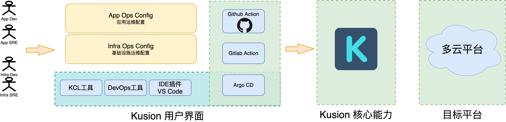
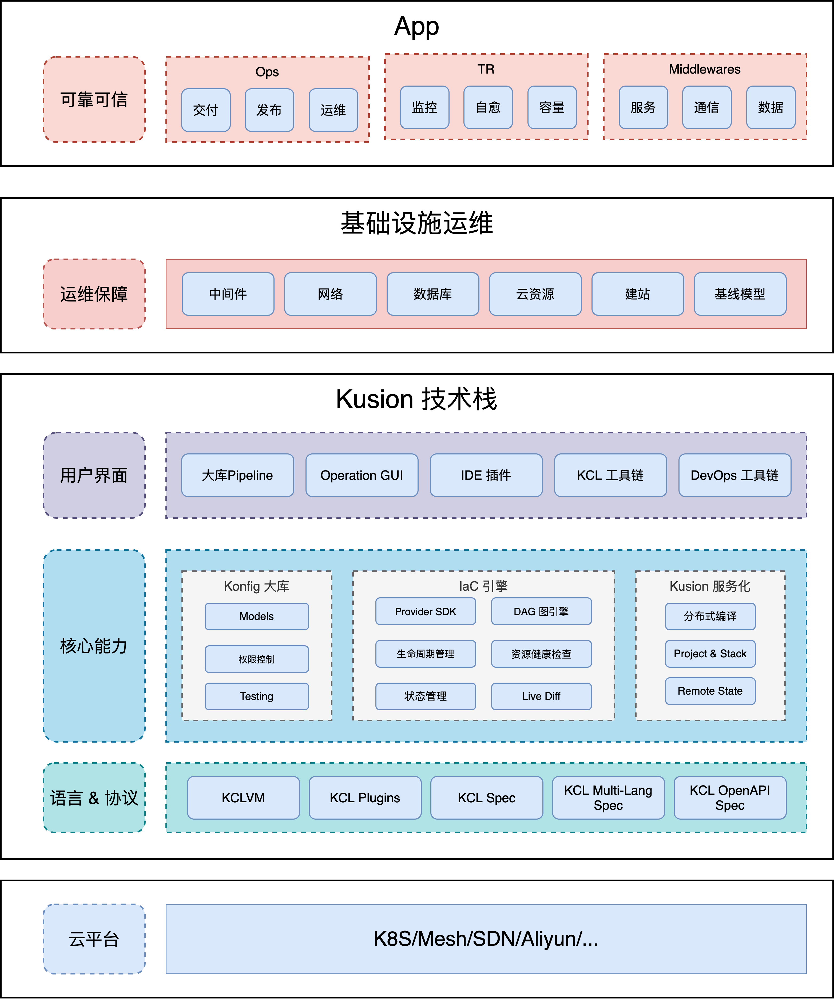
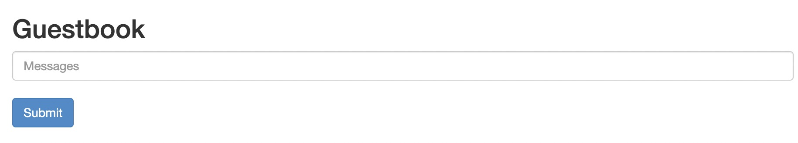

KusionStack 实战
本书主要讲解如何使用 KusionStack 工具部署 Kubernetes 相关应用。

- KusionStack 主页: https://kusionstack.io/
- 仓库地址: https://github.com/KusionStack/kusion-in-action-book
Note: 本地安装 mdbook 二进制工具，后执行
mdbook serve命令启动本地电子书服务，然后打开对应网址查看。
版权

《KusionStack 实战》 由 KusionStack 团队 采用 知识共享 署名-非商业性使用-禁止演绎 4.0 国际 许可协议进行许可。
前言
KusionStack 作为一个可编程技术栈(后文简称 Kusion)，其设计目标是为提升运维的效能，通过语言 +Konfig+ 工具 三位一体的手段突破手工运维的时效性限制，为云原生代码化的快速落地提供整条解决方案。
K8S 虽然是一个伟大的平台，但是因为作为平台系统的定位决定了不可能为各种业务场景提供完整的解决方案，这些缺失的拼图只能有用户和社区共建。比如 K8S 提供的时候比较原子化的操作，离真实的需要组合、批量等复杂操作的业务场景有一定的 Gap，这间接造成了云原生落地过程中模型编写困难、配置上线困难、以及线上问题定位困难能问题。
Kusion 尝试通过最大化的复用配置代码、通过通过 KCL 能力和抽象的 Konfig 减少用户接触的配置见面、通过区分不同的角色和功能将 K8S 的大量需要填空的配置变成带默认选项的选择题，从而简化复杂业务的配置编写。同时通过动态组合配置，实现统一套配置库为多集群、批量等环境、甚至不同的基础设施平台提供差异化支持。
当 Kusion 提供复杂配置描述能力之后，自然要面临复杂配置配套的更为复杂的操作支持。Kusion 通过 kusionctl 工具聚合了面向业务的高层次的工具，为配置的编写、测试、发布提供一站式支持，为配置代码变更上线提供了最短的路径。
作为复杂的软件系统，对于线上系统的诊断、定位和分析工具也是落地过程中必不可少的环节。使用者在提交变更后往往需要了解模型的调和步骤，逐步模型观察状态。为了使得用户更易于理解、上手，Kusion 提供对用户变更的模型及其关联模型的变更追踪、链路可视化、live 对比、关键资源可视化、异常定位等功能，帮助用户低成本玩转云原生实践。
天下武功，唯快不破！正因为 Kusion 提升了运维的效能，这使得应用在相同的可接受超时时间内可以做更多的事情，包含将更多的批量、复合的操作打包为事务的可能。通过事务的原子化语义，Kusion 用户可以用更简单的方式运维包装为事务的批量、分步等复杂的操作，从而为更高级的场景构建更多的可复用的配置积木。
本书希望通过一些可以实操的示例展示 Kusion 的用法和设计理念，为云原生代码化的快速落地贡献绵薄之力。透过 Kusion 看云，万物皆可配置，快乐运维不是梦。
1. 简介
Kusion 是开源的可编程技术栈，由面向领域的 KCL 配置语言、Konfig 标准模型配置库、Kusion 状态引擎框架、配套的管理工具和 IDE 辅助插件等部分组成。本章我们简单介绍 Kusion 的设计思路和重要组件工具。
1.1 背景
云计算从开始的物理机逐步发展到虚拟机和容器，目前云原生是云计算发展的新阶段。在云原生的变革过程中，软件的架构和使用的方式并没有大的变化。但是云原生时代容器和微服务的流行带来了服务数量级的增长，这对软件的开发、部署和运维模式都带来了新的挑战。
当后台系统从单机架构演变到基于 Kubernetes 平台的微服务架构，天然具备了平台提供的极致的弹性伸缩、故障的恢复等能力。但是定位是基础平台的 Kubernetes 主要实现了容器的调度和编排的能力，而对于企业用户的容器的监控、运维，包括 CI/CD 等定制性需求并没有提供原生的支持。虽然 Kubernetes 提供了灵活的扩展能力，但是不同企业不同的研发能力和投入差异，都为云原生的落地带来了各种挑战。
开源社区通过 kustomize、velocity 等技术组合临时缓解了 Kubernetes 平台的 Yaml 文件爆炸的问题，同时结合 GitOps 和代码评审等手段进一步提升了代码和工程质量，为云原生的运维发展方向提供了很好的实践参考。相比经典运维中台，目前这类技术手段的好处清晰明确，往往可以比较简单的搭建起来，不强依赖产品研发资源投入，但其工程视角缺点也非常明显。首先 Kubernetes API 的设计较为复杂，仅是 Kubernetes 原生提供的 low level API 就暴露了 500 多种模型，2000 多字段，场景上几乎涵盖了基础设施应用层的方方面面，即使是专业同学也很难理解所有细节。其次这种方式的工程化程度很低，违反 DRY 原则，违反各团队职责能力高内聚低耦合的原则。同时由于团队边界造成的多个割裂的平台，用户需在多个平台间切换，每个平台的操作方式各异，加上跳板机黑屏命令，都为运维的效率造成了很大影响。
以国内的蚂蚁集团为例：蚂蚁基础技术在过去几年通过 mesh 等技术手段将通用技术下层到基础平台，同时通过为集中式、标准化、低变更频率的应用提供统一的运维中台充分的拥抱了云原生技术，并获取了其带来的技术红利。随着云原生基础服务和标准化应用逐渐稳定后，对于非标准应用等个性化的需求的运维支持成了云原生落地所面临的主要矛盾。在典型案例中一个多应用的 infra 项目仍然维护了多达 5 万多行 YAML，即使在有一定的工具支持的情况下，完成一次完整的发布需要 2 天时间。如何结合 Kubernetes 生态的开放、可配置的特点，以自动的方式支持部署和运维非标应用是当前亟需解决的问题。
根据康威定律，一个良好的软件系统架构一定是反映了背后的组织架构运转模式。因此云原生落地中的各种困难其实是反映了背后经典运维手段不能适应微服务结构变化的问题。我们不能再以传统的过程式思维来运维海量的云原生应用，需要充分利用声明式思维方式描述系统终态，然后通过 Kubernetes 平台、终态的决策引擎和自定义的 operator 自动向描述的系统终态逼近。可以用一个家庭智能温控的例子做类比：我们只需要声明需要一个舒适的温度（声明一个终态），然后家庭智能系统（终态的决策引擎）据不同温度传感器的反馈决定向空调发出具体操作（自定义的 operator），当室内温度被外界因素干扰时家庭智能系统会自动即使调控到舒适的温度这个终态。SRE 也可以通过声明式描述系统终态、配合自动化终态调和引擎实现云原生规模化运维工作。
声明式描述终态是第一步，Kusion 项目尝试通过面相云原生运维场景定制的 KCL 声明式的配置语言、通用的基础模型 Konfig 库、KusionCtl 引擎和工具、再结合 IDE 插件来实现高效的 GieOps 代码化方式运维云原生的基础设施和应用。同时我们希望通过将 Kusion 完全开源的方式来为云原生的快速落地贡献绵薄之力。
1.2 KCL 语言
KCL(Kusion Configuration Language)是 Kusion 内置的面相云原生领域配置语言。KCL 设计之初受 Python3 启发，同时吸收了声明式、OOP 编程范式的理念设计等设计，是一种专用于配置定义、校验的动态强类型的面相配置和策略场景的语言。本节我们将快速展示 KCL 语言的基本特性。
1.2.1 hello KCL
学习新语言的最佳途径是自己亲手写几个小程序，配置语言也是如此。KCL 作为一种配置策略语言，我们可以像写配置一样写 KCL 程序。
下面是一个简单的 hello.k 程序：
hello = "KCL"
将 hello 属性设置为 "KCL" 字符串。然后将代码保存到 hello.k 文件中。
如何执行这个程序取决于具体的开发环境，我们先假设本地的 macOS 或者是 Linux 系统已经安装了 kcl 命令（或者通过 docker run --rm -it kusionstack/kusion bash 进入 Docker 环境测试）。然后在文件所在的目录命令行输入以下命令执行：
$ kcl hello.k
hello: KCL
命令行执行的效果如图所示：
输出的是 YAML 格式的配置数据。这个程序虽然简单，但是我们可以通过执行 KCL 配置程序到输出结果验证了开发环境和 kcl 命令行的基本用法。
1.2.2 再复杂一点的配置
常见的配置数据除了的普通的 key-value 对，还有嵌套的字典和列表类型，同时 value 基础类型除了字符串还有布尔和数值等类型。下面是更为复杂一点的 server.k 配置：
# This is a KCL document
title = "KCL Example"
owner = {
name = "The KCL Authors"
data = "2020-01-02T03:04:05"
}
database = {
enabled = True
ports = [ 8000, 8001, 8002 ]
data = [ ["delta", "phi"], [3.14] ]
temp_targets = { cpu = 79.5, case = 72.0 }
}
servers = [
{ip = "10.0.0.1", role = "frontend"}
{ip = "10.0.0.2", role = "backend"}
]
其中 # 开头的表示行注释。owner 的 value 是一个字典，字典的面值通过 {} 方式包含的内容，字典内部的 key-value 和 hello = "KCL" 例子的写法类似。database 则是另一个字典，其中字典属性的 value 出现了布尔 True、列表 [] 和 {} 字典，其中列表和字典中还出现了数值类型的 value。 最后一个 servers 属性则是一个列表，列表内部嵌套着字典（字典和列表以及后续将要讲到的 schema 都可以相互嵌套）。
该配置输出的 YAML 结果如下：
$ kcl server.k
title: KCL Example
owner:
name: The KCL Authors
data: '2020-01-02T03:04:05'
database:
enabled: true
ports:
- 8000
- 8001
- 8002
data:
- - delta
- phi
- - 3.14
temp_targets:
cpu: 79.5
case: 72.0
servers:
- ip: 10.0.0.1
role: frontend
- ip: 10.0.0.2
role: backend
1.2.3 schema 定义配置的结构
KCL 通过 schema 语法结构为有着固定属性结构和默认值行为的属性提供抽象支持。
比如上面例子的中 database 的配置一般是用默认值即可。这样我们可以通过为数据库的默认配置定义一个结构：
schema DatabaseConfig:
enabled: bool = True
ports: [int] = [ 8000, 8001, 8002 ]
data: [[str|float]] = [ ["delta", "phi"], [3.14] ]
temp_targets: {str:float} = { cpu = 79.5, case = 72.0 }
enabled 是布尔类型；ports 为整数列表类型；data 为列表的列表，内层的列表元素是字符串或者浮点数类型；temp_targets 则是一个字典类型，字典的属性值是浮点数类型。并且 DatabaseConfig 的每个属性都定义了默认值。
然后通过 database = DatabaseConfig{} 就可以产生和默认值相同属性的结构。用户也可以修复默认值：
database = DatabaseConfig{
ports = [2020, 2021]
}
schema DatabaseConfig 不仅仅为属性提供了默认值，还为属性添加了类型信息。因此，如果用户不小心写错属性值类型的话，KCL 将会给出友好的错误提示，比如下面的例子将 ports 错误地写成了浮点数类型：
database = DatabaseConfig{
ports = [1.2, 1.3]
}
执行时将产生类似以下的错误（显示的文件路径和本地环境有关）：
$ kcl server.k
KCL Compile Error[E2G22] : The type got is inconsistent with the type expected
---> File /path/to/server.k:8:2
8 | ports = [1.2, 1.3]
5 ^ -> got [float(1.2)|float(1.3)]
---> File /path/to/server.k:3:2
3 | ports: [int] = [ 8000, 8001, 8002 ]
5 ~ -> expect [int]
expect [int], got [float(1.2)|float(1.3)]
类似地我们可以用以下的代码封装 servers 部分的属性：
schema ServerConfig:
ip: str
role: "frontend" | "backend"
servers = [
ServerConfig{ip = "10.0.0.1", role = "frontend"}
ServerConfig{ip = "10.0.0.2", role = "backend"}
]
其中 ServerConfig 的 ip 是字符串类型，并没有给出默认值。用户在生成 ServerConfig 类型的属性时必须手工添加 ip 属性的值，否则 KCL 将会报出缺少必填属性的错误。role 属性是 "frontend" | "backend" 枚举字符串类型。
此外，schema 还可以结合 可选属性、check、mixin、继承和扩展模块实现更为复杂的配置和策略数据的抽象，细节可以参考手册部分的文档。
1.2.4 Playgound
如果本地安装了 KCL 工具，可以通过 kcl-go play 启动一个 Playgound：
$ kcl-go play
listen at http://127.0.0.1:2021
...
该命令会自动在浏览器打开 Playgound 页面，如下图所示：
代码通过 import 展示了如何导入一个扩展模块，同时展示了基本的 schema 用法。
Playgound 提供了基本的执行功能，同时对代码提供了语法高亮和格式化的功能。
1.3 Konfig 模型库
Konfig 是 Kusion 内置的基础配置模型库（ Kuison+config 的组合词）。本节将展示如何通过 KCL 语言为已有的 YAML 配置建模，从而构建一个自己的模型库——这也是 Konfig 的雏形。最后简单介绍 Konfig 诞生的背景。
1.3.1 YAML 建模
YAML 是用来写配置文件的语言，非常简洁和强大，目前是 Kubernetes 官方钦定的首选配置交换格式。YAML 很灵活也很好写，同时也很容易出错！比如 Kubernetes 官网的 Nginx-Deployment 例子：
apiVersion: apps/v1
kind: Deployment
metadata:
name: nginx-deployment
spec:
replicas: 3
selector:
matchLabels:
app: nginx
template:
spec:
containers:
- image: nginx:1.14.2
name: nginx
ports:
- containerPort: 80
该例子部署一个 Nginx 服务。如果我们不小心写错其中的某个配置，并且不能在第一时间发现，那么可能带来未知的风险。其实对于 Kubernetes 语境来说，这个 Deployment 配置是有着明确的定义的：每个字段的名字和类型、以及相关字段的值需要满足一定的规则等。通过定制面向领域的 DSL 语言来提升配置的安全性正是设计 KCL 语言的初衷。
我们可以尝试用 KCL 给 Deployment 配置建模：
schema Deployment:
final apiVersion: str = "apps/v1"
final kind: str = "Deployment"
metadata?: apis_ObjectMeta
spec?: DeploymentSpec
我们首选通过 KCL 的 schema 关键字定义一个 Deployment 模型。其中的 apiVersion 和 kind 字段有着固定的类型和值，因此我们通过 final 和默认值的特性描述。而对于复杂的 metadata 和 spec 字段则通过新的 ObjectMeta 和 DeploymentSpec 模型描述，它们的字段名均已问号结尾表示是可选的字段。
ObjectMeta 模型的全部属性有很多，目前只定义需要的部分如下：
schema ObjectMeta:
name?: str
namespace?: str
同样 DeploymentSpec 模型的定义如下：
schema DeploymentSpec:
replicas?: int
selector: LabelSelector
template: PodTemplateSpec
其中 replicas 是一个可选字段，selector 和 template 字段则继续用新模型描述。
LabelSelector 模型用户描述 Label 选择的参数，定义如下：
schema LabelSelector:
matchLabels?: {str:str}
其中 matchLabels 字段是一个 dict 字典类型，字典的 Key 和 Value 都是字符串。
PodTemplateSpec 模型定义如下：
schema PodTemplateSpec:
metadata?: ObjectMeta
spec?: PodSpec
schema PodSpec:
containers: [Container]
schema Container:
image?: str
name: str
ports?: [ContainerPort]
schema ContainerPort:
containerPort: int
其中 metadata 字段用的是已经定义的 ObjectMeta 类型，spec 字段则通过 PodSpec 和 Container 描述其中容器的镜像和名称，ports 通过 ContainerPort 类型描述。
1.3.2 基于模型库重写配置
现在我们可以将以上代码合并保持到 apps/deployment.k 文件中作为一个自定义的模型库，这就是第一版 Konfig 雏形了（Konfig 开源模型库在 base.pkg.kusion_kubernetes.api.apps.v1 也提供了更完整的 Deployment 模型定义）。
现在可以创建 main.k，基于这个 Deployment 模型重新构造配置：
import apps
demo = apps.Deployment {
metadata.name = "nginx-deployment"
spec = {
replicas = 3
selector.matchLabels = {
app = "nginx"
}
template.spec.containers = [
{
name = "nginx"
image = "nginx:1.14.2"
ports = [
{containerPort = 80}
]
}
]
}
}
现在输入的 KCL 配置代码虽然和原来的 YAML 文件差不多，但是获得了 Konfig 模型库提供的静态化类型和运行时校验规则的能力，同时可以配合 IDE 插件获得更好的编码效率，也可以让我们写的配置代码更安全。然后通过 kcl main.k 命令可以将模型渲染出之前的 YAML 文件了。
1.3.3 Konfig 诞生的背景
从本节的例子可以发现，相对于我们的业务配置代码，底层模型的抽象代码更多。真实 Konfig 模型库中的 Deployment 代码更加庞大，同时也提供了更加完整灵活的静态类型和规则检查保障。Konfig 最初朴素的出发点就是改善 YAML 用户的效率和体验，我们希望通过将代码更繁杂的模型抽象封装到统一的模型库中，从而简化用户侧配置代码的编写。
Konfig 的前身是蚂蚁在落地 IaC&GitOps 的过程中采用的是 Konfig 大库。蚂蚁开始就把所有的 IaC 配置代码维护在一个统一的 Konfig 大仓库中，代码包括基础配置代码和业务配置代码两部分。之所以用一个大的仓库管理全部的 IaC 配置代码，是由于蚂蚁内部不同代码包的研发主体不同，会引发出包管理和版本管理的问题，从而导致平台侧需要支持类似编译平台的能力。采用大库模式下，业务配置代码、基础配置代码在一个大库中，因此代码间的版本依赖管理比较简单，平台侧处理也比较简单，定位唯一代码库的目录及文件即可，代码互通，统一管理，便于查找、修改、维护（大库模式也是 Google 等头部互联网公司内部实践的模式）。
大库模式虽然有版本管理简单等优点，但是缺点也非常多：比如大库导致仓库体积爆炸的问题会给网络下载带来更大的压力，因此不适合开源社区的分布式、异步协作的开发模式。因此当 Kusion 项目绝对开源后，我们对 Konfig 大库做了大量改造和拆分工作，核心目标是将和 Kubernetes 相关的基础模型保留，将和蚂蚁内部业务耦合比较紧密的业务代码剥离（业务相关部分的最佳实践方式会在案例实践场景中体现）。因此开源版本的 Konfig 库可以看作是 Kusion 项目针对 Kubernetes 云原生的开放生态提供基础设施模型库，这样可以帮助用户以较少的配置代码部署和运维 Kubernetes 生态的应用。同时我们希望和社区共建的方式完善和改进 Kubernetes 生态的基础设施模型库。
1.4 Kusion 用户界面
Kusion 一词来源于 fusion（意为融合） + kubernetes，是基于云原生基础设施，通过定义云原生可编程接入层，提供包括配置语言、模型界面、自动化工具、最佳实践在内的一整套解决方案，连通云原生基础设施与业务应用，连接定义和使用基础设施的各个团队，串联应用生命周期的研发、测试、集成、发布各个阶段，服务于云原生自动化系统建设，加速云原生落地。Kusion 引擎的终极目标是为了解决自动化运维：SRE 只是通过 KCL 语言 +Konfig 大库描述自己的业务终态，Kusion 引擎通过实时监控系统状态根据描述的状态响应规则进行运维操作。上层用户通过 Kusion 用户界面和 Kusion 引擎交互。
1.4.1 单 App 应用界面
Kusion 用户界面并不是仅仅指传统的网页控制台界面，它是用户在使用 Kusion 过程中直接感知的能力和功能界面。最简单的 Kusion 用户界面就是 KusionCtl 命令行工具。

以上只是针对单 App 应用这种简单场景的关系图，用户只面对一个 Kusion 命令行工具。
1.4.2 规模化 App 应用界面
Kusion 最初是针对规模化 App 应用运维而开发的可编程配置技术栈。为了开发效率，Kusion 同时为 kusionctl 命令行提供了配套和的提效工具：KCL 命令、DevOps 工具、IDE 插件等。此外为了和开发系统集成，Kusion 同时也可针对 Github Action、Gitlab Action 和 ArgoCD 等系统配置对应的能力。因此更详细的 Kusion 用户界面如下图所示：

现在 Kusion 用户界面对应其中向左倒下的大写 L 形状的界面，包含本地工具和各种 CICD 集成的界面等。
1.4.3 不同角色和场景组合
在规模化运维中，经常需要涉及 App 和基础设施两个不同的应用场景，同时涉及开发者和 SRE 两种不同的角色，两种角色和两种场景产生的多种组合。不同角色的用户针对不同的场景分别开发 App Ops Config 和 Infra Ops Config，并统一到 Konfig 大库中进行开发和版本管理。这些配置最终构成了规模化运维涉及到各种配置代码，它们通过 Kusion 用户界面开发、测试，并最终通过各种 CICD 系统自动化 Apply 到最终目标平台。
1.4.4 本地工具和生态集成
KCL 命令行工具、DevOps 工具和 IDE 插件等本地工具用于提供原子的能力，同时方便本地开发工作。开发完成之后通过 Konfig 大库合并代码时触发各种 CICD 系统自动化 Apply 到最终目标平台。
1.5 IDE 插件
为了提高 IDE 开发 KCL 的效率，Kusion 为 VS Code 在线版和本地版本提供了插件支持。在线版本可以从 https://vscode.dev 地址打开，然后安装“KCL for vscode.dev 插件”，效果如下:

本地 VS Code 可以安装完整的 KCL 插件，提供了高亮、自动补全（部分：关键字补全等）、跳转、悬停、大纲等功能。插件虽然不是 Kusion 必须的部分，但是可以提高效率推荐安装。
2. 你好 Kusion
本章以 Kubernetes 官方的 Guestbook 为例子，展示 Kusion 工具对接 Kubernetes 的用法。
2.1 初始化工程
在开始前用户需要先配置好 Kusion 工具 和 Konfig 配置库。初始化工程是在 Konfig 配置库内添加代码。
2.1.1 执行 init 命令
第一步：进入 Konfig/appops 目录对应的命令行，输入 kusion init 命令初始化工程：
$ kusion init
Use the arrow keys to navigate: ↓ ↑ → ←
? This command will initialize KCL file structure and base codes for a new project.Please choose a KCL schema type:
▸ Server
选择工程的类型：目前只有一个 Server 类型，点击回车确定。然后输入工程的名字：
Use the arrow keys to navigate: ↓ ↑ → ←
✔ Server
✔ project name: █emo
比如输入 demo 的名字然后回车确认。然后输入 stack 的名字（stack 是为了方便管理大量云原生应用而人为做的分类）：
Use the arrow keys to navigate: ↓ ↑ → ←
✔ Server
project name: demo
stack name: █ev
然后选择默认集群的名字：
Use the arrow keys to navigate: ↓ ↑ → ←
✔ Server
project name: demo
stack name: dev
✔ cluster name: █efault
cluster name: █efault
然后指定镜像：
Use the arrow keys to navigate: ↓ ↑ → ←
✔ Server
project name: demo
stack name: dev
✔ cluster name: █efault
✔ image: █cr.io/google-samples/gb-frontend:v4
初始化完成后会产生一个 demo 目录，其中内容如下：
$ cd demo
$ tree .
.
├── README.md
├── base
│ └── base.k
├── dev
│ ├── ci-test
│ │ └── settings.yaml
│ ├── kcl.yaml
│ ├── main.k
│ └── stack.yaml
└── project.yaml
3 directories, 7 files
现在我们已经有一个完整的 Kusion 配置项目。
2.1.2 理解代码内容
查看 base 目录的基线配置，其中 base/base.k 内容如下：
import base.pkg.kusion_models.kube.frontend
import base.pkg.kusion_models.kube.frontend.container
import base.pkg.kusion_models.kube.templates.resource as res_tpl
import base.pkg.kusion_models.kube.frontend.service
# Application Configuration
appConfiguration: frontend.Server {
# Main Container Configuration
mainContainer = container.Main {
name = "php-redis"
env = [
{
name = "GET_HOSTS_FROM"
value = "dns"
}
]
ports = [{containerPort = 80}]
}
selector = {
"tier" = "frontend"
}
podMetadata.labels: {
"tier" = "frontend"
}
schedulingStrategy.resource = res_tpl.medium
services = [
service.Service {
name = "frontend-service"
type = "NodePort"
ports = [{port = 80}]
}
]
}
其中包含主容器和应用的默认配置。基线配置参数相对相对，不过都是默认的配置，平时不需要经常修改。
dev 对应 stack 类型（常见的类型还有 gray 表示灰度、pre 表示预发、prod 表示正是版本等），这里表示开发状态的配置。 配置的入口在 dev/main.k 文件：
import base.pkg.kusion_models.kube.frontend
import base.pkg.kusion_models.kube.templates.resource as res_tpl
# The application configuration in stack will overwrite
# the configuration with the same attribute in base.
appConfiguration: frontend.Server {
image = "gcr.io/google-samples/gb-frontend:v4"
schedulingStrategy.resource = res_tpl.tiny
}
main.k 中只需要填写和基线参数不一样的部分。比如 image 在基线的基础之后增加新的镜像路径，schedulingStrategy.resource 则是覆盖已有的基线配置。
另外，project.yaml 中记录了工程的名字 demo，dev/stack.yaml 中记录了当前目录的类型。
2.2 Apply 子命令
kusion 提供了一个 apply 子命令将当前 stack 中的一系列资源应用到运行时，它会根据 Konfig 堆栈中的 KCL 文件创建或更新或删除资源。 正如 kubectl apply 和 terraform apply 等子命令一样，对于基于声明式接口的系统 Apply 子命令通常用于生效配置操作，它也是 Kusion 的核心功能。本节展示 kusion apply 子命令的基本用法。
2.2.1 查看 apply 子命令帮助
Kusion 默认会生成执行计划，并最终交给用户确认执行。首先查看 apply 命令的帮助信息：
$ kusion apply -h
Apply a series of resource changes within the stack.
Create or update or delete resources according to the KCL files within a Konfig stack. By default, Kusion will generate
an execution plan and present it for your approval before taking any action.
You can check the plan details and then decide if the actions should be taken or aborted.
Examples:
# Apply with specifying work directory
kusion apply -w /path/to/workdir
# Apply with specifying arguments
kusion apply -D name=test -D age=18
# Apply with specifying setting file
kusion apply -Y settings.yaml
# Skip interactive approval of plan details before applying
kusion apply --yes
Options:
-D, --argument=[]: Specify the arguments to apply KCL. Example: kusion apply -D name=test -D age=18 | kusion apply
--argument name=test,age=18
-d, --detail=false: Automatically show plan details after previewing it
--operator='': Specify the operator. Example: kusion apply -operator dayuan.ldy
-O, --overrides=[]: Specify the configuration override path and value
-Y, --setting=[]: Specify the command line setting files. Example: kusion apply -Y settings.yaml
-w, --workdir='': Specify the work directory.
-y, --yes=false: Automatically approve and perform the update after previewing it
Usage:
kusion apply [flags] [options]
Use "kusion apply options" for a list of global command-line options (applies to all commands).
2.2.2 通过 apply 命令查看变更信息
在 demo/dev 目录下输入 kusion apply 命令查看执行计划：
$ kusion apply
SUCCESS Compiling in stack dev...
Stack: dev Provider Type Name Plan
* ├─ kubernetes v1:Namespace demo Create
* ├─ kubernetes apps/v1:Deployment demodev Create
* └─ kubernetes v1:Service frontend-service Create
Use the arrow keys to navigate: ↓ ↑ → ←
? Do you want to apply these diffs?:
▸ yes
no
details
在执行之前先切换到 details 选项回车查看详细信息：
✔ details
Use the arrow keys to navigate: ↓ ↑ → ←
? Which diff detail do you want to see?:
▸ all
<kubernetes, v1:Namespace, demo> Create
<kubernetes, v1:Service, frontend-service> Create
<kubernetes, apps/v1:Deployment, demodev> Create
cancel
可以查看新建的 Namespace、Service、Deployment 等资源。切换到 all 选项回车查看全部差异：
✔ details
✔ all
Provider: kubernetes
Type: apps/v1:Deployment
Name: demodev
Plan: Create
Diff:
(root level)
± type change from <nil> to map
- <nil>
+ id:
status:
attributes:
apiVersion: apps/v1
kind: Deployment
metadata:
name: demodev
namespace: demo
spec:
replicas: 1
selector:
matchLabels:
app.kubernetes.io/env: dev
app.kubernetes.io/instance: demo-dev
app.kubernetes.io/name: demo
cluster.x-k8s.io/cluster-name: default
tier: frontend
template:
metadata:
labels:
app.kubernetes.io/env: dev
app.kubernetes.io/instance: demo-dev
app.kubernetes.io/name: demo
cluster.x-k8s.io/cluster-name: default
tier: frontend
spec:
containers:
- env:
- name: GET_HOSTS_FROM
value: dns
- name: APP_NAME
value: demo
- name: ENVIRONMENT
value: dev
- name: INSTANCE
value: demo-dev
- name: CLUSTER
value: default
image: gcr.io/google-samples/gb-frontend:v4
name: php-redis
ports:
- containerPort: 80
protocol: TCP
resources:
limits:
cpu: 100m
ephemeral-storage: 1Gi
memory: 100Mi
requests:
cpu: 100m
ephemeral-storage: 1Gi
memory: 100Mi
private: {}
dependsOn: []
Provider: kubernetes
Type: v1:Namespace
Name: demo
Plan: Create
Diff:
(root level)
± type change from <nil> to map
- <nil>
+ id:
status:
attributes:
apiVersion: v1
kind: Namespace
metadata:
name: demo
private: {}
dependsOn: []
Provider: kubernetes
Type: v1:Service
Name: frontend-service
Plan: Create
Diff:
(root level)
± type change from <nil> to map
- <nil>
+ id:
status:
attributes:
apiVersion: v1
kind: Service
metadata:
name: frontend-service
namespace: demo
spec:
ports:
- port: 80
selector:
app.kubernetes.io/env: dev
app.kubernetes.io/instance: demo-dev
app.kubernetes.io/name: demo
cluster.x-k8s.io/cluster-name: default
tier: frontend
type: NodePort
private: {}
dependsOn: []
2.2.3 通过 apply 命令执行变更计划
在执行变更计划前需要确保本地可以链接到 Kubernetes 集群，如果是本地测试可以选择启动 Docker 自带的 Kubernetes 集群。
在 dev 目录下执行 kusion apply 命令，然后选择 yes 执行计划：
$ $ kusion apply
SUCCESS Compiling in stack dev...
Stack: dev Provider Type Name Plan
* ├─ kubernetes v1:Namespace demo Create
* ├─ kubernetes apps/v1:Deployment demodev Create
* └─ kubernetes v1:Service frontend-service Create
✔ yes
Start applying diffs......
SUCCESS Creating Namespace/demo
SUCCESS Creating Deployment/demodev
SUCCESS Creating Service/frontend-service
Creating Service/frontend-service [3/3] ██████████████████ 100% | 0s
Apply complete! Resources: 3 created, 0 updated, 0 deleted.
成功启动服务。
2.2.4 查看服务信息
kusion apply 命令启动的服务在 demo 名字空间下，也就是执行 kusion init 命令时指定的参数，保存在 demo/project.yaml 文件中。
我们可以通过 Kubernetes 自带的 kubectl 命令查看下产生了哪些 deploy：
$ kubectl get --namespace demo deploy
NAME READY UP-TO-DATE AVAILABLE AGE
demodev 1/1 1 1 12m
查看有哪些 pods：
$ kubectl get --namespace demo pods
NAME READY STATUS RESTARTS AGE
demodev-6c85bfcc89-w67ns 1/1 Running 0 6m45s
查看有哪些 service：
$ kubectl get --namespace demo service
NAME TYPE CLUSTER-IP EXTERNAL-IP PORT(S) AGE
frontend-service NodePort 10.0.0.1 <none> 80:30083/TCP 10m
服务已经绑定到了宿主机器的 30083 端口，可以在浏览器打开 http://localhost:30083 查看：

说明服务已经正常启动。
3. Kusion 核心概念
本章尝试解释 Kusion 可编程配置技术栈背后的架构和概念。其中用户界面展示了 Kusion 技术栈用户使用界面，Project & Stack 介绍了 Kusion 推荐的项目组织结构，State & Backends 则介绍了 Kusion 背后的状态管理和厚度存储设计。最后介绍了 Kusion 架构和 KCL 语言的特色和设计思路。
3.1 Kusion 架构图
本节介绍 Kusion 架构图，架构图本质上反应的是 Kusion 的工作流程和工作机制。熟悉了整体架构图之后，同样能够做到纲举目张为 Kusion 的日常使用提供指导。
3.1.1 架构简图
先从架构简图开始，其中涉及 App 和基础设施如何通过 Kusion 技术栈联通目标平台。如下图所示：
App 和 Infra 的开发人员完整最基础的功能和配置开发，SRE 则基于基础的功能通过完成运维配置代码化工作，然后通过 Kusion 技术栈将运维配置代码转化为不同目标平台的具体操作。
3.1.2 架构大图
在架构简图的之上，将 Kusion 面对的具体场景和特性填充到各个子模块中的得到了架构大图：

上层对应 App 和基层设施的不同场景，底层对接不同的云平台，中间是 Kusion 技术栈本身的组成。Kusion 可编程协议栈内部又分为用户界面、核心能力、配置语言等部分。其中用户界面主要面试上层的云原生应用的用户，通过 Kusion 提供的 Konfig 大库自动集成 Pipeline、Operation 操作界面、VSCode 的插件和相关的命令行工具等，和内部的 Konfig 模型库、IaC 引擎和 Kusion 服务等进行能力对接。最下面的是 KCL 配置策略语言，以及和 KCL 语言相关的语言插件、其他高级语言的 SDK 和其他 OpenAPI 风格的配置数据对接等，语言和协议层为上面的 Konfig 大库提供编程能力、为 IaC 引擎提供可被编程的 SDK 能力等。
3.2 Project & Stack
为了应对规模化运维面临的配置、团队多维度爆炸的挑战，Kusion 采用业界通用的思路通过引入 Project & Stack 一层抽象来规范和简化化配置代码的管理。本节介绍 Project & Stack 基本概念。
3.2.1 Project & Stack 概念图
Project & Stack 是 Kusion 抽象的项目组织结构，项目采用 Project 概念抽象，其中对应多个 Stack 为可以独立部署、单独配置的最小 KCL 程序单元。二者关系如下图：
其中的 Base 比较特殊，对应 Project 中通用的基线配置，用于不同的 Stack 共享（并非独立部署单元）。
3.2.2 Project
任何一个直接包含 project.yaml 的文件夹被称为一个 Project，project.yaml 用于说明该 project 的元数据信息。一个 Project 由一个或多个互相关联的 Stack 组成。Project 往往具有明确的业务语意，用户可以把一个应用映射成一个 Project，也可以把一种运维场景映射为一个 Project，比如建站运维等。一个 Project 必然属于一个租户。
3.2.3 Stack
Stack 是一组可以独立部署、单独配置的 KCL 程序，是可以部署为一组基础设施实体的最小配置单元。一个 Stack 的所有专用配置文件需要位于同一文件夹内，该文件夹需要位于其所属 Project 的路径下，并且直接包含 stack.yaml。stack.yaml 用于说明该 Stack 的元数据信息，并且可以作为识别一个 Stack 的标识。Stack 往往表示 CI/CD 流程中的不同阶段，如 dev、gray、prod 等，或者表示一个大项目中不同的小项目。Kusion 提供 Stack 级别的权限控制。
3.2.4 Project 和 Stack 的关系
一个 Project 包含一个或多个 Stack，而一个 Stack 必须属于一个 Project 并且只能属于一个 Project。用户可以根据自身需求解释 Project 和 Stack 的含义，灵活地组织两者之间的结构和关系。在跨团队协作、云原生的场景下，我们提供了如下 3 种 Project 和 Stack 关系组织的最佳实践：
- Enviroment 模式：Project 以一个整体存在，Stack 表示 Project 的不同环境，比如 dev、pre 和 prod 等，这些环境通常与 CI/CD 流程中的不同阶段相对应。Stack 具有 Project 需要的全部配置，只是对应部署的环境不同。
- Micro-Project 模式：与微服务类似，Project 由多个较小的 Project 组成，比如一个 Project 需要的基础设施可能包括 Kubernetes 对象、数据库实体、监控实体等，这些基础设施实体均可作为一个较小的 Project 进行单独配置。我们将这些的较小的 Project 称为 Micro-Project，并通过 Stack 进行表示。Stack 仅具有 Project 需要的部分配置。
- Hybrid 模式：Hybrid 模式是 Enviroment 模式与 Micro-Project 模式的组合，Stack 不仅可以表示 Project 部署的不同环境，也可以表示 Micro-Project。一般而言，具有 Micro-Project 特性的 Stack 可以和某个具有 Enviroment 特性的 Stack 共同提供 Project 在该环境下的全部配置。具有 Micro-Project 特性的 Stack 往往需要在 Project 的不同环境间进行复用。具有 Enviroment 特性的 Stack 可能也不包含 Project 的需要全部配置。
Note: 在 Hybrid 模式中，具有 Micro-Project 特性的 Stack 和 base 文件夹均可提供不同环境中的通用能力，两者存在如下两点不同。1、具有 Micro-Project 特性的 Stack 可以进行编译、部署成一个基础设施实体，而 base 无法和一个基础设施实体进行对应；2、具有 Micro-Project 特性的 Stack 表示一个较小 Project 的配置，而 base 表示多个环境和 Micro-Project 的通用配置。总的来说，只需记住具有 Micro-Project 特性的 Stack 仍是一个 Stack，具备 Stack 的特性；而 base 文件夹只是通用 KCL 程序的集合，并不具备 Stack 的特性。
3.2.5 Project 和 Stack 的工程结构
用户可以灵活地组织 Project 和 Stack 的工程结构，只需遵循如下 2 个规则：
- Stack 目录必须位于 Project 目录下，但不要求 Stack 目录是 Project 目录的下一层；
- Project 之间和 Stack 之间不可嵌套，即不允许一个 Project 目录下有另一个 Project 目录，一个 Stack 目录下有另一个 Stack 目录。
我们推荐用户把 Project 和 Stack 名称作为对应的文件夹名称，但这不是必须的。用户可以根据自身需求对 Project 和 Stack 进行分类，组织对应的目录结构。一种常见的目录结构遵循 康威定律：Project_Type/Orgnization_Name/Project_Name/Stack_Name 项目的类型、组织结构的类型和代码保存相似的映射关系。
3.2.6 例子：Nginx
以 Konfig 中自带的 appops/nginx-example 为例，下面是对应的目录和文件结构：
appops/nginx-example
├── README.md # Project 介绍文件
├── base # 各环境通用配置
│ └── base.k # 通用 KCL 配置
├── dev # 环境特有配置
│ ├── ci-test # 测试目录
│ │ ├── settings.yaml # 测试数据
│ │ └── stdout.golden.yaml # 测试期望结果
│ ├── kcl.yaml # 多文件编译配置，是 KCL 编译的入口
│ ├── main.k # 当前环境 KCL 配置
│ └── stack.yaml # Stack 配置文件
└── project.yaml # Project 配置文件
根目录中有 project.yaml 文件表示对应一个 Project，然后 dev/stack.yaml 表示对应 Stack，base 目录对应基线配置（不是一个 Stack）。dev/ci-test 是测试相关配置和数据，kcl.yaml 和 main.h 是应用的 KCL 配置程序代码。
3.3 State & Backends
本节介绍 State & Backends，它们是 Kusion 引擎如何存储状态和对接不同平台的关键概念。
3.3.1 架构图
Kusion 工具的核心之一是一个结构化配置数据的状态按需执行框架引擎，其前端通过 KCL 开发的配置产出 YAML 等价的配置数据，然后通过可热插拔的后端执行引擎将 YAML 配置数据按需应用到不同的云原生平台。
3.3.2 State
State 用于存储资源下发后 Backend 驱动返回的状态，是对于 IaaS 状态的映射。用户执行 Apply 命令时，Kusion 会根据 Konfig 与 State 之间的差异，来按需执行资源创建、更新或删除操作。用户执行 Apply 命令后，Kusion 会根据 Backend 返回的信息更新 state 状态。
Kusion state 默认存储于"kusion_state.json"文件中，也可存储于远程后端，便于团队协作。
3.3.3 Backends
Kusion state 表示存储 Backend 状态的存储配置，默认情况下使用 Local 类型表示的本地磁盘存储状态。对于团队协作项目，State 可存储在远程服务上供多人共享使用。
3.4 和上游下游的关系
Kusion 作为一个面向云原生的可编程配置技术栈并不是一个独立的技术孤岛，相反只有和整个生态的上下游工具协作配合才是最佳的实践。本节介绍 Kusion 和上游下游的关系。
3.4.1 协作关系图
从开发者和 SRE 开发维护配置、然后通过各种 CICD 系统对接到 Kusion 核心引擎，最终对接到目标平台。Kusion 整个工作流中和周边生态的协作关系图如下：

Kusion 涉及的上下游相关项目有：Kubernetes 自身及生态技术、Kubenetes 运维自动化技术、GitOps CICD 系统、IaaS 管理技术及各个云厂商和 IaC 领域语言及数据格式等。
4. 场景: 日常运维
本章尝试通过展示部署应用、为应用配置监控、资源容量和镜像升级等常见的运维操作展示 Kusion 在 SRE 日常运维中是用法。
4.1 部署 Deployment
本节展示如何使用 Kusion 配套工具，完成一个 Kubernetes 的 Deployment 的部署。
4.1.1 准备开始
在开始之前，我们需要做以下准备工作：
1、安装 Kusion 工具链
我们推荐使用 kusion 的官方安装工具 kusionup，可实现 kusion 多版本管理等关键能力。详情信息请参阅下载和安装。
2、下载开源 Konfig 大库
在本篇指南中，需要用到部分已经抽象实现的 KCL 模型，有关 KCL 语言的介绍，可以参考 Tour of KCL。
仓库地址： https://github.com/KusionStack/konfig.git
3、可用的 Kubernetes 集群
必须要有一个 Kubernetes 集群，同时 Kubernetes 集群最好带有 kubectl 命令行工具。 如果你还没有集群，你可以通过 Minikube 构建一个你自己的集群。
本指南要求你对 Kubernetes 有基本的了解。不清楚相关概念的，可以前往 Kubernetes 官方网站，查看相关说明：
4.1.2 初始化
本指南是以 KCL 和 Kusion 的方式部署 Deployment，依赖 kusion 工具、Konfig 大库和 Kubernetes 集群。
打开 Konfig 大库项目，进入 appops 目录，初始化 KCL 项目：
cd appops && kusion init
kusion init 命令会提示你输入可能需要的参数，例如项目名称、项目描述，镜像地址等；也可以一路点击 回车 使用默认值。输出类似于：
✔ deployment-single-stack A minimal kusion project of single stack
This command will walk you through creating a new kusion project.
Enter a value or leave blank to accept the (default), and press <ENTER>.
Press ^C at any time to quit.
✔ project name: deployment-single-stack
✔ project description: A minimal kusion project of single stack
✔ Stack: dev
✔ ClusterName: kubernetes-dev
✔ Image: gcr.io/google-samples/gb-frontend:v4
Created project 'deployment-single-stack'
到此，我们就成功初始化一个 KCL 项目：deployment-single-stack，该代码包含一个 Project 和一个 Stack。
其中，project name 和 project description 是每个模板都需要设置的属性，目的是为了模板共享。
剩余三个字段，是模板中需要用户填入的三个属性，Stack 表示配置栈的名称，可以理解为配置的隔离标识；
ClusterName 是指集群名称，在本例中暂未使用；Image 表示 Deployment 的主容器的镜像地址。
有关 Project 和 Stack 的设计说明，请参阅 Project&Stack。
该项目的目录结构如下：
deployment-single-stack
├── README.md
├── base
│ └── base.k
├── dev
│ ├── ci-test
│ │ └── settings.yaml
│ ├── kcl.yaml
│ ├── main.k
│ └── stack.yaml
├── kusion.yaml
└── project.yaml
3 directories, 8 files
可以看到，目录共分成三层，每层目录都有各自的设计意义。
根目录下 project.yaml 表示项目级别的属性；kusion.yaml 是模板的配置文件，与本指南的操作内容无关。
base 目录存放的是公共配置；dev 目录存放的是定制化配置，kcl.yaml 是静态编译配置，指定了编译文件，
main.k 是定制化配置的具体代码，stack.yaml 存放的是是配置栈的描述信息；
dev/ci-test 目录存放的是动态编译配置和最终输出，默认情况下，编译输出到该目录下的 stdout.golden.yaml 文件。
整体来说，.k 文件是 KCL 源码，.yaml 是配置文件。
4.1.3 配置编译
到此，已经借助 kusion 提供的内置模板，完成了项目的开发。 项目的编程语言是 KCL，不是 Kubernetes 认识的 JSON/YAML，因此还需要编译得到最终输出。
首先进入到项目的 Stack 目录（deployment-single-stack/dev）并执行编译：
cd deployment-single-stack/dev && kusion compile
输出默认保存在 deployment-single-stack/dev/ci-test/stdout.golden.yaml 文件中。
有关 kusion 命令行工具的说明，执行
kusion -h，或者参考工具的在线文档 Overview of Kusion CLI。
4.1.4 配置生效
完成编译，现在开始下发配置。通过查看 stdout.golden.yaml 文件，可以看到 3 个资源：
- 一个 name 为 deployment-single-stackdev 的 Deployment
- 一个 name 为 deployment-single-stack 的 Namespace
- 一个 name 为 frontend-service 的 Service
该文件的内容已经是 Kubernetes 能够识别的配置，可以使用 kubectl apply -f stdout.golden.yaml 直接下发配置，
也可以使用 kusion apply 完成配置编译并下发（该命令包含了配置编译）。
推荐使用 kusion 工具，本例中的编译输出是完整的 YAML 声明，但不是所有的 KCL 项目编译结果都是如此。
执行命令：
kusion apply
输出类似于：
SUCCESS Compiling in stack dev...
Stack: dev Provider Type Name Plan
* ├─ kubernetes v1:Namespace deployment-single-stack[0] Create
* ├─ kubernetes apps/v1:Deployment deployment-single-stackdev[0] Create
* └─ kubernetes v1:Service frontend-service[0] Create
✔ yes
Start applying diffs......
SUCCESS Creating Namespace/deployment-single-stack
SUCCESS Creating Deployment/deployment-single-stackdev
SUCCESS Creating Service/frontend-service
Creating Service/frontend-service [3/3] ███████████████████████████████████████████ 100% | 0s
Apply complete! Resources: 3 created, 0 updated, 0 deleted.
以上就完成了配置生效，可以使用 kubectl 工具检查资源的实际状态。
1、 检查 Namespace
kubectl get ns
输出类似于：
NAME STATUS AGE
argocd Active 59d
default Active 72d
deployment-single-stack Active 10m
2、检查 Deployment
kubectl get deploy -n deployment-single-stack
输出类似于：
NAME READY UP-TO-DATE AVAILABLE AGE
deployment-single-stackdev 1/1 1 1 11m
3、检查 Service
kubectl get svc -n deployment-single-stack
输出类似于：
NAME TYPE CLUSTER-IP EXTERNAL-IP PORT(S) AGE
frontend-service NodePort 10.0.0.1 <none> 80:30226/TCP 11m
4、检查应用
使用 kubecl 工具，将本机端口 30000 映射到 Service 端口 80
kubectl port-forward svc/frontend-service -n deployment-single-stack-xx 30000:80
4.1.5 查看效果
打开浏览器访问 http://127.0.0.1:30000：

正常可以看到类似以上界面。
4.2 为应用配置监控
本节展示如何为应用配置监控，通过 Prometheus 查看应用状态。
4.2.1 准备工作
我们将展示以下内容：初始化配置代码、使能监控配置和查看监控面板。在开始前需要安装 KusionCtl、Minikube 和 kube-prometheus。
4.2.2 初始化配置代码
通过 kusion 命令行工具初始化代码：
$ kusion init
✔ Server
project name: prometheus-example-app
stack name: prod
cluster name: default
image: quay.io/brancz/prometheus-example-app:v0.3.0
其中 quay.io/brancz/prometheus-example-app:v0.3.0 镜像对应的应用代码可参考：https://github.com/brancz/prometheus-example-app。
这个应用程序是一个示例，说明如何使用 Prometheus 指标轻松监测 HTTP 处理程序，它使用 Prometheus go 客户端监听本地 8080 端口创建一个新的 Prometheus 注册表。
具体的监控指标如下：
- 任何对
/的请求都会产生一个200响应码，这会增加此响应代码的计数器指标 - 任何对
/err的请求都将产生一个404响应代码，会增加相应计数器的指标
4.2.3 使能配置
通过将 enableMonitoring 设置为 True 使能配置，并添加主容器端口号配置 8080。代码如下：
import base.pkg.kusion_models.kube.frontend
import base.pkg.kusion_models.kube.frontend.container
import base.pkg.kusion_models.kube.frontend.container.env as e
import base.pkg.kusion_models.kube.frontend.container.port as cp
import base.pkg.kusion_models.kube.frontend.container.probe as p
# The application configuration in stack will overwrite
# the configuration with the same attribute in base.
appConfiguration: frontend.Server {
# Main container configuration
mainContainer: container.Main {
name = "prometheus-example-app"
ports = [
cp.ContainerPort {
name = "web"
containerPort = 8080
}
]
}
enableMonitoring = True
}
配置 web 服务端口号。
4.2.4 查看监控面板
通过 kusion apply 命令部署配置:
SUCCESS Compiling in stack prod...
Stack: prod Provider Type Name Plan
* ├─ kubernetes v1:Namespace prometheus-example-app[0] Create
* ├─ kubernetes monitoring.coreos.com/v1:PodMonitor prometheus-example-appprod[0] Create
* └─ kubernetes apps/v1:Deployment prometheus-example-appprod[0] Create
可以看到，除了部署 kubernetes Deployment 和 Namespace 资源外，还额外部署了 PodMonitor 资源用于配置 Prometheus 监听应用 Pod，当资源都创建完成时，可以通过如下命令查看 Prometheus 监控面板。
kubectl --namespace monitoring port-forward svc/prometheus-k8s 9090
最后通过 http://localhost:9090 访问监控面板并查看应用程序的监控指标。
4.3 扩展应用资源容量
本节展示如果扩展资源容量。
4.3.1 准备条件
在开始之前同样需要安装 KusionCtl、Minikube 环境，然后将展示初始化配置代码、应用扩容等内容。
4.3.2 配置资源规格
可以通过编辑 schedulingStrategy.resource 的值来设置主容器的资源规格。有两个方法修改资源规格，一种是修改 resource 表达式中 cpu、memory 的值：
import base.pkg.kusion_models.kube.frontend
import base.pkg.kusion_models.kube.frontend.resource as res
appConfiguration: frontend.Server {
# 修改 resource 表达式中 cpu、memory 的值
# 原值：schedulingStrategy.resource = "cpu=100m,memory=100Mi,disk=1Gi"
# 新的值（应用扩容）：
schedulingStrategy.resource = res.Resource {
cpu = 500m
memory = 500Mi
disk = 1Gi
}
}
另一种是使用预置的 resource 值替代原值来进行应用扩容：
import base.pkg.kusion_models.kube.frontend
import base.pkg.kusion_models.kube.templates.resource as res_tpl
appConfiguration: frontend.Server {
# 使用预置的 resource 值替代原值来进行应用扩容：
# 原值：schedulingStrategy.resource = "cpu=100m,memory=100Mi,disk=1Gi"
# 新的值（应用扩容）：
schedulingStrategy.resource = res_tpl.large
}
上述代码是样例配置，可以根据 SchedulingStrategy 模型定义和实际情况添加自定义配置：
import base.pkg.kusion_models.kube.frontend.resource as res
schema SchedulingStrategy:
""" SchedulingStrategy represents scheduling strategy.
Attributes
----------
resource: str | res.Resource, default is "1<cpu<2,1Gi<memory<2Gi,disk=20Gi", required.
A Pod-level attribute.
Main container resource.
"""
resource: str | res.Resource = "1<cpu<2,1Gi<memory<2Gi,disk=20Gi"
4.3.3 配置生效
执行以下命令将升级后的镜像进行生效：
$ kusion apply
SUCCESS Compiling in stack dev...
Stack: dev Provider Type Name Plan
* ├─ kubernetes v1:Namespace demo UnChange
* ├─ kubernetes v1:Service demo-service UnChange
* └─ kubernetes apps/v1:Deployment demodev Update
✔ yes
SUCCESS Updating apps/v1:Deployment
Updating apps/v1:Deployment [1/1] ████████████████████████████████ 100% | 0s
通过 Kubernetes 工具查看资源验证。
4.4 应用镜像升级
本节展示如何升级应用镜像。
4.4.1 准备条件
在开始之前同样需要安装 KusionCtl、Minikube 环境，然后将展示通过修改配置代码完成镜像升级工作。
4.4.2 镜像升级
编辑 dev/main.k 中的 image 的值：
import base.pkg.kusion_models.kube.frontend
appConfiguration: frontend.Server {
# 修改 image 的值为要升级的版本
# image = "gcr.io/google-samples/gb-frontend:v4"
image = "gcr.io/google-samples/gb-frontend:v5"
}
4.4.3 配置生效
执行以下命令将升级后的镜像进行生效：
$ kusion apply
SUCCESS Compiling in stack dev...
Stack: dev Provider Type Name Plan
* ├─ kubernetes v1:Namespace demo UnChange
* ├─ kubernetes v1:Service demo-service Update
* └─ kubernetes apps/v1:Deployment demodev UnChange
✔ yes
SUCCESS Updating Service/demo-service
Updating Service/demo-service [1/1] ████████████████████████████████ 100% | 0s
通过 Kubernetes 工具查看资源验证。
4.5 补充说明
为了适配云原生场景，Kusion 将一些概念内置到了最佳实践之中。本节补充解释一些云原生应用到概念。
4.5.1 命名空间
在以应用为中心的运维体系中，通常可以借助 Kubernetes 中的命名空间（Namespace）进行应用之间的资源隔离，即以应用名作为命名空间名。 同时，支持应用部署的所有 Kubernetes 资源都部署到同一个命名空间中。
在 Kusion 技术栈推荐的目录工程结构中，可以在 Project 配置文件（project.yaml）中声明当前 Project 的 Name， 在应用运维场景中，Project Name 即是应用名称，默认也是命名空间名称。
用户可以根据自己的业务需求修改命名空间，建议项目名称和命名空间保持一致，但不是硬性要求。
通过上一步初始化的样例，可以从 project.yaml 看到相关配置：
# The project basic info
name: deployment-single-stack
4.5.2 资源规格
通过配置 schedulingStrategy.resource 设置应用主容器的资源规格，此配置存在于 dev/main.k 文件。
有关资源规格的抽象定义，可以查看 Konfig 仓库中
base/pkg/kusion_models/kube/templates/resource.k文件。
dev/main.k 中资源规格配置：
appConfiguration: frontend.Server {
schedulingStrategy.resource = res_tpl.tiny
}
通过配置 schedulingStrategy.resource 设置主容器的资源规格，上面的赋值语句等价于：
import base.pkg.kusion_models.kube.frontend.resource as res
schedulingStrategy.resource = res.Resource {
cpu = 100m
memory = 100Mi
disk = 1Gi
}
4.5.3 主容器配置
通过配置 mainContainer 设置主容器，此配置存在于 base/bask.k 文件中。
有关主容器的抽象定义，可以查看 Konfig 仓库中 base.pkg.kusion_models.kube.frontend.container 模块的文档。
base/bask.k 中主容器配置：
appConfiguration: frontend.Server {
# Main Container Configuration
mainContainer = container.Main {
name = "php-redis"
env = [
{
name = "GET_HOSTS_FROM"
value = "dns"
}
]
ports = [
{ containerPort = 80 }
]
}
}
4.5.4 差异化配置
通过 if-else 添加差异化配置，比如根据实际部署的集群名称设置不同的 labels。
有关 KCL 语义相关的详细说明，请参阅表达式。
base/bask.k 中 Pod Label 的配置：
appConfiguration: frontend.Server {
podMetadata.labels = {
if __META_CLUSTER_NAME in ["minikube", "kind"]:
cluster = __META_CLUSTER_NAME
else:
cluster = "other"
}
}
4.5.5 服务配置
Service 的名称、类型、暴露的端口号等字段，可通过 services 字段配置。
有关 Service 的抽象定义，可以查看 Konfig 仓库中
base/pkg/kusion_models/kube/frontend/service/service.k文件。
base/bask.k 中 Service 的配置：
appConfiguration: frontend.Server {
services = [
service.Service {
name = "frontend-service"
type = "NodePort"
ports = [
{ port = 80 }
]
}
]
}
5. 场景: 对接社区生态
开源社区和云原生的共同哲学都是协作发展，因此 Kusion 对接已有的社区生态是一个必然选项。本章通过 OpenAPI 和 Terraform 展示 Kusion 对接已有社区资源。
5.1 OpenAPI
对于全新的项目来说，您只需要从头开始采用 Kusion 技术栈编写和管理基础设施配置即可，我们提供了针对不同运行时的用户指南文档引导您这一过程。 然而，对于已经建设了基础设施的项目，可能已有存量的配置模型和数据，对此，Kusion 也提供了一些自动化工具帮助您快速迁移。
对于 kubernetes 用户，Kusion 提供了 OpenAPI 到 KCL 模型代码的转换工具，以直接复用 Kubernetes 已有的上百个核心模型。 对于 istio 用户，以及 Kubernetes 内置模型无法支持的情况， Kusion 还支持将 CRD 自动生成为 KCL 模型代码。
5.1.1 Kubernetes OpenAPI Spec
从 Kubernetes 1.4 开始，引入了对 OpenAPI 规范（在捐赠给 Open API Initiative 之前称为 swagger 2.0）的 alpha 支持，API 描述遵循 OpenAPI 规范 2.0，从 Kubernetes 1.5 开始，Kubernetes 能够直接从源码自动地提取模型并生成 OpenAPI 规范，自动化地保证了规范和文档与操作/模型的更新完全同步。
此外，Kubernetes CRD 使用 OpenAPI v3.0 validation 来描述（除内置属性 apiVersion、kind、metadata 之外的）自定义 schema，在 CR 的创建和更新阶段，APIServer 会使用这个 schema 对 CR 的内容进行校验。
5.1.2 KCL OpenAPI 支持
KCLOpenAPI 工具支持从 OpenAPI/CRD 定义提取并生成 KCL schema. 在 KCLOpenapi Spec 中明确定义了 OpenAPI 规范与 KCL 语言之间的映射关系。
安装 Kusion 工具包的同时会默认安装 KCLOpenapi 工具，KCLOpenapi 工具的使用和示例可参见 KCLOpenAPI 工具
5.1.3 从 Kubernetes 模型迁移到 Kusion
Kubernetes 内置模型的完整 OpenAPI 定义存放在 Kubernetes openapi-spec 文件。以该文件作为输入，KCLOpenapi 工具能够生成相应版本的全部模型 schema. 接下来以发布部署场景为例，演示从 Kubernetes 迁移到 Kusion 的流程。假设您的项目正在使用 Kubernetes Deployment 定义发布部署配置，迁移到 Kusion 只需要如下几步：
5.1.3.1 Kubernetes Deployment 转为 KCL Schema
从 Kubernetes 1.23 版本的 openapi-spec 文件中，可以找到 apps/v1.Deployment 模型相关的定义，截取片段如下：
{
"definitions": {
"io.k8s.api.apps.v1.Deployment": {
"description": "Deployment enables declarative updates for Pods and ReplicaSets.",
"properties": {
"apiVersion": {
"description": "APIVersion defines the versioned schema of this representation of an object. Servers should convert recognized schemas to the latest internal value, and may reject unrecognized values. More info: https://git.k8s.io/community/contributors/devel/sig-architecture/api-conventions.md#resources",
"type": "string"
},
"kind": {
"description": "Kind is a string value representing the REST resource this object represents. Servers may infer this from the endpoint the client submits requests to. Cannot be updated. In CamelCase. More info: https://git.k8s.io/community/contributors/devel/sig-architecture/api-conventions.md#types-kinds",
"type": "string"
},
"metadata": {
"$ref": "#/definitions/io.k8s.apimachinery.pkg.apis.meta.v1.ObjectMeta",
"description": "Standard object's metadata. More info: https://git.k8s.io/community/contributors/devel/sig-architecture/api-conventions.md#metadata"
},
"spec": {
"$ref": "#/definitions/io.k8s.api.apps.v1.DeploymentSpec",
"description": "Specification of the desired behavior of the Deployment."
},
"status": {
"$ref": "#/definitions/io.k8s.api.apps.v1.DeploymentStatus",
"description": "Most recently observed status of the Deployment."
}
},
"type": "object",
"x-kubernetes-group-version-kind": [
{
"group": "apps",
"kind": "Deployment",
"version": "v1"
}
]
}
},
"info": {
"title": "Kubernetes",
"version": "unversioned"
},
"paths": {},
"swagger": "2.0"
}
将以上述 spec 保存为 deployment.json，执行 kclopenapi generate model -f deployment.json，将在当前工作空间生成所有相关的 KCL schema 文件。在 Konfig 的 base/pkg/kusion_kubernetes 目录中，我们已经保存了一份由此生成的 KCL 文件，并生成了对应的模型文档。
5.1.3.2 使用生成的 KCL Schema
-
使用生成的模型，直接声明 KCL 配置
我们可以在 KCL 配置中直接实例化生成的 Deployment，得到一份部署声明，如下：
import kusion_kubernetes.api.apps.v1 frontend = v1.Deployment { metadata.name: "frontend" spec.selector.matchLabels: {app: guestbook, tier: frontend} replicas: 3 template.metadata.labels: {app: guestbook, tier: frontend} spec.containers: [ { name: php-redis image: gcr.io/google-samples/gb-frontend:v4 resources.requests: { cpu: "100m", memory: "100Mi"} } env: [{name: GET_HOSTS_FROM, value: dns}] ports: [{containerPort: 80}] ] }在 Konfig 仓库中增加以上配置声明，经过的编译后，其结果等价于 Kubernetes examples guestbook-frontend，关于 Konfig 仓库及编译命令可参考 Konfig 模型库快速开始。
-
最佳实践：对 Kubernetes 模型进一步抽象，定义用户友好的界面
由于 Kubernetes 内置模型较为原子化和复杂，我们推荐以 Kubernetes 原生模型作为后端输出的模型，而向用户暴露一份更为友好和简单的前端模型界面。在 Konfig 的 kusion_models 目录中已经保存了一份经过良好抽象的模型 —— Server 模型，点此查看 Server Schema
5.1.4 从 Kubernetes CRD 迁移到 Kusion
如果您的项目中使用了 CRD，也可以采用类似的模式，生成 CRD 对应的 KCL schema，并基于该 schema 声明 CR。使用 kclopenapi generate model --crd --skip-validation -f your_crd.yaml 命令从 CRD 生成 KCL Schema。或者使用 KCL 声明 CR 的模式与声明 Kubernetes 内置模型配置的模式相同，在此不做赘述。
5.2 Terraform
Terraform 是一个 IT 基础架构自动化编排工具，它的口号是“Write, Plan, and Create Infrastructure as Code”，是一个“基础设施即代码”工具，类似于 AWS CloudFormation，允许您创建、更新和版本控制的 AWS 基础设施。目前其社区已经具备了大量的资源，Kusion 通过复用 Provider 生态来兼容社区的资源。
Kusion 通过兼容的方式支持 Terraform 的 Provider，同时借助第三方的工具可以方便将 Provider 支持的模型导出为 KCL 格式的 Schema 模型。用户可以在此基础之上继续封装更简化的 API。
6. 多平台: 对接阿里云生态
阿里云是中国最大的云计算平台，提供了很多可定制的计算和数据处理能力，提供了对 Terraform 的支持。而 Kusion 底层可以对接 Terraform 的 Provider 生态，因此也通过 Kusion 也可以对基础设施进行编码，利用代码来进行资源的增删查改。本文展示如何通过 Kusion 管理 ECS 和 SLB 等资源。
6.1 ECS 云主机
本文介绍如何使用 Kusion 创建一台 ECS 实例，以及必须的其他关联资源。
6.1.1 准备条件
在开始之前，您还需要一个阿里云账号和访问密钥（AccessKey）。 请在阿里云控制台中的 AccessKey 管理页面 上创建和查看您的 AccessKey。
本节用到的阿里云资源在 Konfig 中的 base.pkg.kusion_models.clouds.alicloud 包定义（还在开发中，查看 代码）。
要创建一个 ECS 机器，还需要创建对应的安全组和交换机，而安全组和交换机需依赖一个虚拟网络，它们的关系如图所示：

下面我们将通过 Kusion 配置代码化的方式构建以上需要的资源。
6.1.2 生成专有网络
专有网络 VPC（Virtual Private Cloud）是用户基于阿里云创建的自定义私有网络, 不同的专有网络之间二层逻辑隔离，用户可以在自己创建的专有网络内创建和管理云产品实例，比如 ECS、SLB、RDS 等。详细专有网络 VPC 创建信息查看 阿里云 VPC 文档 。
专有网络对应 base.pkg.kusion_models.clouds.alicloud 包定义的 AlicloudVPC 模型（TODO：参考链接）：
schema AlicloudVPC:
name?: str
cidr_block?: str
...
目前只使用到 name 名称字段和 cidr_block IPv4 网段字段。然后初始化一个名称为 alicloud_vpc，子网地址为 172.16.0.0/16 的专有网络。
专业网络配置参数初始化代码如下：
_vpc = alicloud.AlicloudVPC {
name = "alicloud_vpc"
cidr_block = "172.16.0.0/16"
}
有了专有网络配置参数之后还需要通过阿里云提供的 Terraform Provider 实例化，类型 base.pkg.kusion_models.commons.provider_resource 包定义。对应的 Kusion 代码如下：
vpc = provider.Provider {
providerName = "alicloud"
resourceType = "alicloud_vpc"
providerData = _vpc
providerMeta = {
region = "cn-beijing"
access_key = "L****************3"
secret_key = "x****************o"
}
}
其中 alicloud 和 alicloud_vpc 指定阿里云的 VPC 专有网络类型的资源；_vpc 是对应上面专业网络的配置；对应区域为 cn-beijing，还有对应的 AccessKey 信息。
6.1.3 生成交换机（VSwitch）
交换机（vSwitch）是组成专有网络的基础网络模块，用来连接不同的云资源。成功创建交换机后，您可以在交换机中创建云资源、绑定自定义路由表或者绑定网络 ACL。详细交换机使用信息查看 阿里云使用交换机文档 。
交换机对应 base.pkg.kusion_models.clouds.alicloud 包定义的 AlicloudVswitch 模型（TODO：参考链接）：
schema AlicloudVswitch:
vpc_id: str
name?: str
availability_zone?: str
cidr_block: str
...
目前需要的字段有 vpc_id 对应的专有网络、name 名称字段和 availability_zone 可用区、cidr_block IPv4 网段
初始化交换机配置参数如下：
_vswitch = alicloud.AlicloudVswitch {
vpc_id = "$kusion_path.registry.terraform.io/aliyun/alicloud.alicloud_vpc.alicloud_provider.alicloud_vpc.id"
name = "alicloud_vswitch"
availability_zone = "cn-beijing-b"
cidr_block = "172.16.0.0/21"
}
需要注意的是 vpc_id 和前面创建的专有网络有关联关系。然后通过阿里云的 Provider 进行资源实例化：
vswitch = provider.Provider {
providerDependOn = [
"registry.terraform.io/aliyun/alicloud.alicloud_vpc.alicloud_provider.alicloud_vpc"
]
providerName = "alicloud"
resourceType = "alicloud_vswitch"
providerData = _vswitch
providerMeta = {
region = "cn-beijing"
access_key = "L****************3"
secret_key = "x****************o"
}
}
通过 providerDependOn 定义交换机创建依赖专有网络的创建的依赖关系。其他的可用区和 AccessKey 等参数和专有网络实例化类似。
6.1.4 生成安全组（SecurityGroup）
安全组是 ECS 实例的虚拟防火墙，用于设置单个或多个 ECS 实例的网络访问控制，每台 ECS 实例至少需要属于一个安全组。详细安全组创建信息查看 阿里云安全组创建文档 。
交换机对应 base.pkg.kusion_models.clouds.alicloud 包定义的 AlicloudSecurityGroup 模型（TODO：参考链接）：
schema AlicloudSecurityGroup:
vpc_id?: str
name?: str
description?: str
...
目前需要的字段有 vpc_id 对应的专有网络、name 名称字段和 description 描述字段。
初始化安全组配置参数如下：
#create secutirygroup
_security_group = alicloud.AlicloudSecurityGroup {
vpc_id = "$kusion_path.registry.terraform.io/aliyun/alicloud.alicloud_vpc.alicloud_provider.alicloud_vpc.id"
name = "alicloud_security_group"
description = "alicloud-security-group"
}
需要注意的是 vpc_id 和前面创建的专有网络有关联关系。然后通过阿里云的 Provider 进行资源实例化：
security_group = provider.Provider {
providerDependOn = [
"registry.terraform.io/aliyun/alicloud.alicloud_vpc.alicloud_provider.alicloud_vpc"
]
providerName = "alicloud"
resourceType = "alicloud_security_group"
providerData = _security_group
providerMeta = {
region = "cn-beijing"
access_key = "L****************3"
secret_key = "x****************o"
}
}
通过 providerDependOn 定义安全组创建依赖专有网络的创建的依赖关系。其他的可用区和 AccessKey 等参数和专有网络实例化类似。
6.1.5 生成 ECS 实例
云服务器 ECS（Elastic Compute Service）是阿里云提供的性能卓越、稳定可靠、弹性扩展的 IaaS（Infrastructure as a Service）级别云计算服务。详细云服务器信息查看 阿里云实例创建 。
交换机对应 base.pkg.kusion_models.clouds.alicloud 包定义的 AlicloudInstance 模型（TODO：参考链接）：
schema AlicloudInstance:
availability_zone?: str
vswitch_id?: str
security_groups: [str]
image_id: str
instance_type: str
instance_name?: str
password?: str
...
其中 vswitch_id 引用交换机 id 字段，availability_zone 引用安全组 id 字段（依赖安全组的创建）。image_id 为镜像的 ID、instance_type 为机器的类型、instance_name 为机器的名字、password 是可选的参数。
初始化 ECS 配置参数如下：
_instance = alicloud.AlicloudInstance {
availability_zone = "cn-beijing-b"
vswitch_id = "$kusion_path.registry.terraform.io/aliyun/alicloud.alicloud_vswitch.alicloud_provider.alicloud_vswitch.id"
security_groups = [
"$kusion_path.registry.terraform.io/aliyun/alicloud.alicloud_security_group.alicloud_provider.alicloud_security_group.id"
]
instance_type = "ecs.n2.small"
image_id = "ubuntu_18_04_64_20G_alibase_20190624.vhd"
instance_name = "kusion-alicloud-instance"
password = "Demo1234fd"
}
需要注意的是 vswitch_id 和 security_groups 等配置对其他资源的依赖关系。然后通过阿里云的 Provider 进行资源实例化：
instance = provider.Provider {
providerDependOn = [
"registry.terraform.io/aliyun/alicloud.alicloud_vswitch.alicloud_provider.alicloud_vswitch",
"registry.terraform.io/aliyun/alicloud.alicloud_security_group.alicloud_provider.alicloud_security_group"
]
providerName = "alicloud"
resourceType = "alicloud_instance"
providerData = _instance
providerMeta = {
region = "cn-beijing"
access_key = "L****************3"
secret_key = "x****************o"
}
}
通过 providerDependOn 定义安全组创建依赖专有网络的创建的依赖关系。其他的可用区和 AccessKey 等参数和专有网络实例化类似。
6.1.6 执行 Apply
执行 kusion apply 命令创建资源：

然后运行 ssh root@<publicip>，并输入密码来访问 ECS 实例。
6.2 SLB 负载均衡
本文介绍如何使用 Kusion 创建负载均衡。
6.2.1 准备条件
在开始之前，您还需要一个阿里云账号和访问密钥（AccessKey）。 请在阿里云控制台中的 AccessKey 管理页面 上创建和查看您的 AccessKey。
本节用到的阿里云资源在 Konfig 中的 base.pkg.kusion_models.clouds.alicloud 包定义（还在开发中，查看 代码）。
6.2.2 负载均衡
阿里云 负载均衡 SLB（Server Load Balancer） 是一种对流量进行按需分发的服务，通过将流量分发到不同的后端服务来扩展应用系统的服务吞吐能力，并且可以消除系统中的单点故障，提升应用系统的可用性。
专有网络对应 base.pkg.kusion_models.clouds.alicloud 包定义的 AlicloudSLB 模型（TODO：参考链接）：
schema AlicloudSLB:
name?: str
load_balancer_name?: str
load_balancer_spec?: str
address_type?: str
internet_charge_type?: str
vswitch_id?: str
...
负载均衡同样要依赖交换机和专有网络，具体可以参考 6.1 节内容，这里不再重逢。负载均衡配置参数初始化代码如下：
_slb = alicloud.AlicloudSLB {
name = "alicloud_load_balancer"
load_balancer_name = "alicloud_load_balancer"
load_balancer_spec = "slb.s1.small"
address_type = "intranet"
internet_charge_type = "PayByTraffic"
vswitch_id = "$kusion_path.registry.terraform.io/aliyun/alicloud.alicloud_vswitch.alicloud_provider.alicloud_vswitch.id"
}
然后通过阿里云的 Provider 进行资源实例化：
slb = provider.Provider {
providerDependOn = [
"registry.terraform.io/aliyun/alicloud.alicloud_vswitch.alicloud_provider.alicloud_vswitch"
]
providerName = "alicloud"
resourceType = "alicloud_slb_load_balancer"
providerData = _slb
providerMeta = {
region = "cn-beijing"
access_key = "L****************3"
secret_key = "x****************o"
}
}
通过 providerDependOn 定义负载均衡创建依赖专有网络的创建的依赖关系。其他的可用区和 AccessKey 等参数和专有网络实例化类似。
6.2.3 执行 Apply
执行 kusion apply 命令创建资源：
打开 Web 页面查看负载均衡信息：

说明创建成功。
7. 开源社区
Kusion 技术栈作为一种偏向基层设施的技术采用完全开源的模式运作。作为用户或者本书的读者也可以通过参与开源社区共建 Kusion 技术栈。本章简单介绍如何从社区获取帮助、如何为 Kusion 贡献文档和代码。
7.1 寻求帮助
Kusion 有诸多爱好者组成的开发者和用户社群。在加入 Kusion 社群前，请先阅读 参与者公约，期望所有社区成员都遵守该准则。
7.1.1 讨论区
- 在 Github 提交 issue
- 在 Github 讨论组进行交流
- 通过 官网、Github、Twitter、微博 等账户获取最新状态
7.1.2 新功能建议
请尽量避免提交新功能的合并请求 (Pull Request)，我们可能已有专人正在处理，或有可能此功能已经是我们未来规划的一部分。 总之，在提交新功能之前请先联系我们！
7.1.4 分享和布道
和周边同学分享自己使用 Kusion 中遇到的问题和故事。
7.1.5 最新资讯
请关注 Kusion 相关的项目和博客。
7.2 贡献文档
文档是所有软件的对外接口，因此文档的好坏将直接影响用户的体验。作为开源项目，我们可以很容易参与 Kusion 文档的共建。
7.2.1 文档的分类
Kusion 文档分为用户指南、开发文档、内部文档、参考手册和博客文章等，他们的区别如下：
- 用户指南：对应使用文档，是让用户以最小的代价快速使用 Kusion 工具完整工作，不要涉及太多的内部原理和实现
- 开发文档：内部是怎么实现的，主要针对希望了解 Kusion 原理和参与贡献和开发的同学
- 内部文档：针对企业用户的一些内部场景定制的文档
- 参考手册：Kusion 工具、KCL 配置语言、模型库 等全部特性的文档，内容覆盖最广但比较琐碎
- 博客文章：没有特别的限制，可以是针对某些具体的场景、某些技术点或者是整体发展展望等分享文章
在贡献不同类型的文档时，最好能够结合上面的定位对不同的内容做一些适当的裁剪，给读者最佳体验。如果是添加文档或者是投稿博客文章、添加新的文档或者调整文档目录结构请先联系团队成员。
7.2.2 基本规范
- 除标题外，内部小标题尽量带编号，便于阅读
- 工具自动输出的文档需要由到源代码的链接，小标题可以不带编号
- 尽量不要贴大段的代码（30 行以内），代码最好给出文字解释和对应的参考链接
- 有图有真相，但是不推荐过度复杂的架构图
标点和空格
- 在中文的文档中优先使用中文的标点
- 中文和英文之间需要增加 1 个空格
- 中文和数字之间需要增加 1 个空格
- 中文使用全角标点，标点前后均不添加空格
- 英文内容使用半角标点，标点后面加 1 个空格
- 链接前后需要保留一个空格，但是段落开头和中文全角标点附近不用添加空格。
图片和资源文件名
- 文件名和目录名只能用数字、英文字母、下划线
_和减号-组成 - 当前文档的图片放在当前目录的 images 目录下
- 矢量图片可以通过 drawio 离线版 绘制（并同时提交源文件），以 200% 分辨率导出 png 格式图片
- 矢量图也可以通过 Mermaid 在 Markdown 中直接绘制
7.2.3 使用文档内容的基本模式
每个使用文档可以看作是一个相对完整的分享或博客文章（参考手册不再此类）。使用文档遵循以下模式组织内容：
- 概览：本文希望解决什么问题，达到什么效果，可以先放最终效果截图
- 依赖的环境：需要安装什么工具，并给出相关链接
- 引入本文构建资源的关系图或架构图
- 需要用到的 Konfig 模型，给出模型参考页面链接，以及对应的上游原始模型的文档链接
- 具体的操作步骤
- 尽量确保最小化代码，甚至可以刻意隐藏一些干扰代码，同时给出完整代码对应的链接
- 列出每个步骤命令的概要输出信息，并配以文字描述
- 给出测试方式
- 尽量采用社区通用的方式（比如 kube、curl 命令、或浏览器）测试
- 给出测试结果的截图（和开头呼应）
- 总结和展望
- 简单回顾当前操作的流程，以及一些可以展开的地方（可以给出一些链接）
7.2.4 测试和提交 PR
先克隆文档仓库，本地通过 npm run start 和 npm run build 命令测试查看效果，可以参考 构建文档。确保可以正常浏览后提交 PR 即可。
7.3 贡献代码
欢迎参与 Kusion 共建贡献完善代码、完善代码文档和测试，同时也欢迎通过 Issue 提供反馈。本文主要针对修改和完善已有的代码，如果是要增加 Konfig 新模型请先通过 Issue 或讨论中充分讨论，如果是希望增加 KCL 语言请通过 KEP 流程提交。
7.3.1 代码和注释中的错别字
如果只是修改代码和注释中的错别字，不涉及代码逻辑的调整，那么可以直接在 Github 克隆仓库后直接修改并提交 PR。需要注意的是尽量保持代码风格一致。
7.3.2 如何贡献 Konfig 模型库代码
- 先确保本地测试环境正常
- 修改代码并补充测试
- 本地测试通过后提交 PR
7.3.3 如何贡献 KusionCtl 代码
- 先确保本地测试环境正常
- 修改代码并补充测试
- 本地测试通过后提交 PR
7.3.4 如何贡献 KCLVM 代码
- 先确保本地测试环境正常
- 修改代码并补充测试
- 本地测试通过后提交 PR
7.3.5 如何贡献 VS Code 插件代码
请参考 VS Code 插件仓库的相关文档
7.3.6 开发流程相关代码
欢迎通过 Issue 和讨论组讨论。
附录
附录包含了常见概念说明、KCL 常见的用法和和一些参考链接。
附录 A: FAQ
A.1 概念 & 定义
A.1.1 Kusion
Fusion Cloud Native on Kubernetes. Kusion 一词来源于 fusion（意为融合） + kubernetes，是基于云原生基础设施，通过定义云原生可编程接入层，提供包括配置语言、模型界面、自动化工具、最佳实践在内的一整套解决方案，连通云原生基础设施与业务应用，连接定义和使用基础设施的各个团队，串联应用生命周期的研发、测试、集成、发布各个阶段，服务于云原生自动化系统建设，加速云原生落地。我们平时提到 Kusion，一般是对这一整套解决方案的统称；而 Kusion 生态工具链则包含了 kcl 命令行工具、KusionCtl 命令行工具、KCL IDE 插件等贯穿 Kusion 解决方案各个部分的自动化工具。
A.1.2 大写的 KCL 语言
Kusion Configuration Language. 是由云原生工程化系统团队设计和研发的专用于配置定义、校验的动态强类型配置语言，重点服务于配置（configuration）& 策略（policy programing）场景，以服务云原生配置系统为设计目标，但作为一种配置语言不限于云原生领域。KCL 吸收了声明式、OOP 编程范式的理念设计，针对云原生配置场景进行了大量优化和功能增强。KCL 最初受 Python3 脚本语言启发，依托 Python 的语言生态，目前已经发展为独立的面向配置策略的语言。
A.1.3 小写的 kcl 命令
kcl 命令行工具。一般使用全大写字母的 KCL 代指 KCL 语言，而用全小写的 kcl 代指能将 KCL 代码编译为低层次数据输出（如 YAML, JSON 等）的 kcl 命令行工具。
A.1.4 KCLVM
Virtual Machine to parse and compile KCL。指开发 kcl 命令行工具的工程项目，也是 kcl 命令行工具的代码仓库名称，KCLVM 使用 Python、Rust 等多种语言混合开发。
A.1.5 KusionCtl
Kusion Kubernetes Client。KusionCtl 命令行工具旨在简化用户对 K8S 的使用，内置支持对 KCL 的编译、通过登录功能原生支持 Identity 能力，支持多集群访问，提供资源状态汇总及相应的白屏展示、对用户变更模型及其关联模型的变更追踪、链路可视化、live 对比、关键资源可视化、异常定位等功能。
A.1.6 Konfig
Kusion Config. Konfig 是一个 KCL 代码仓库，其中组织了蚂蚁域内各应用的基础设施配置。依据团队协同的层次，Konfig 仓库划分为"基础配置代码"和"业务配置代码"两部分，采用主干开发、分支发布的分支策略。
A.2 语言设计
A.2.1 过程式的 for 循环
KCL 中为何不支持过程式的 for 循环！
KCL 提供了推导表达式以及 all/any/map/filter 表达式等用于对一个集合元素进行处理，满足大部分需求，提供过程式的 for 循环体从目前场景看需求暂时不强烈，因此暂未提供过程式的 for 循环支持
此外，KCL 中虽然没有支持过程式的 for 循环，但是可以通过 for 循环和 lambda 函数“构造”相应的过程式 for 循环
result = [(lambda x: int, y: int -> int {
# 在其中书写过程式的 for 循环逻辑
z = x + y
x * 2
})(x, y) for x in [1, 2] for y in [1, 2]] # [2, 2, 4, 4]
A.2.2 默认变量不可变
KCL 变量不可变性是指 KCL 顶层结构中的非下划线 _ 开头的导出变量初始化后不能被改变。
schema Person:
name: str
age: int
a = 1 # a会输出到YAML中，一旦赋值不可修改
_b = 1 # _b变量以下划线开头命名，不会输出到YAML中, 可多次赋值修改
_b = 2
alice = Person {
name = "Alice"
age = 18
}
规定变量不可变的方式分为两类：
- schema 外的非下划线顶层变量
a = 1 # 不可变导出变量
_b = 2 # 可变非导出变量
附录 B: KCL 语法
B.1. 如何用 KCL 写一个简单的 key-value 对配置
创建一个名为 config.k 的文件
cpu = 256
memory = 512
image = "nginx:1.14.2"
service = "my-service"
上述 KCL 代码中，定义了 4 个变量 cpu 和 memory 被声明为整数类型，并且它们的值为 256 和 512，而 image 和 service 是字符串类型，它们的值为 image 和 service
使用如下命令可以将上述 KCL 文件编译为 YAML 进行输出
kcl config.k
得到的 YAML 输出为:
cpu: 256
memory: 512
image: nginx:1.14.2
service: my-service
如果想要输出到文件，可以使用 -o|--output 参数:
kcl config.k -o config.yaml
B.2. KCL 中有哪些基本的数据类型？
KCL 目前的基本数值类型和值包含:
- 整数类型
int- 举例: 十进制正整数
1, 十进制负整数-1, 十六进制整数0x10, 八进制整数0o10, 二进制整数0b10
- 举例: 十进制正整数
- 浮点数类型
float- 举例: 正浮点数
1.10,1.0, 负浮点数-35.59,-90., 科学记数法浮点数32.3e+18,70.2E-12
- 举例: 正浮点数
- 布尔类型
bool- 举例: 真值
True, 假值False
- 举例: 真值
- 字符串类型
str- 使用引号',"标记- 举例: 双引号字符串
"string","""string""", 单引号字符串'string','''string'''
- 举例: 双引号字符串
- 列表类型
list- 使用[,]标记- 举例: 空列表
[], 字符串列表["string1", "string2", "string3"]
- 举例: 空列表
- 字典类型
dict- 使用{,}标记- 举例: 空字典
{}, 键值均为字符串类型的字典{"key1": "value1", "key2": "value2"}
- 举例: 空字典
- 结构类型
schema- 使用关键字schema定义，并使用相应的 schema 名称进行实例化 - 空值类型
None- 用于表示一个变量的值为空，与输出 YAML 的null值对应 - 未定义值类型
Undefined- 用于表示一个变量未被赋值，值为Undefined的变量不会被输出到 YAML 中
schema Person:
name: str
age: int
alice = Person {
name = "Alice"
age = 18
}
bob = Person {
name = "Bob"
age = 10
}
注意: 所有 KCL 类型的变量均可赋值为空值 None 和未定义的值 Undefined
B.3. 有些 KCL 变量名带 _ 下划线前缀表示什么？和不带 _ 下划线前缀的区别是什么？分别适合什么场景下使用？
KCL 中带下划线前缀的变量表示一个隐藏的，可变的变量，隐藏表示带下划线前缀的变量不会被输出到 YAML 当中，包括包级别的下划线前缀变量和 schema 当中的下划线前缀变量。可变表示带下划线前缀的变量可被多次重复赋值，不带下划线前缀的变量被赋值后不可变。
带 _ 下划线前缀的变量与不带 _ 下划线前缀变量的区别是: 不带 _ 下划线前缀变量默认是导出到 YAML 当中的，并且具有强不可变性；带 _ 下划线前缀变量是不导出的，可变的。
name = 'Foo' # 导出变量，不可变变量
name = 'Bar' # 错误：导出变量只能设置一次
_name = 'Foo' # 隐藏变量，可变变量
_name = 'Bar'
schema Person:
_name: str # hidden and mutable
B.4. 如何向 dict 中添加元素？
可以使用 union 运算符 |, 或者 dict 解包运算符 ** 来向 dict 中添加一个元素，并且可以使用 in,not in 等关键字判断 dict 变量当中是否包含某一个键值
_left = {key = {key1 = "value1"}, intKey = 1} # 注意使用 = 表示覆盖
_right = {key = {key2 = "value2"}, intKey = 2}
dataUnion = _left | _right # {"key": {"key1": "value1", "key2": "value2"}, "intKey": 2}
dataUnpack = {**_left, **_right} # {"key": {"key1": "value1", "key2": "value2"}, "intKey": 2}
输出 YAML 为:
dataUnion:
key:
key1: value1
key2: value2
dataUnpack:
key:
key2: value2
此外还可以使用 字符串插值 或者字符串 format 成员函数特性向 kcl dict 添加变量键值对
dictKey1 = "key1"
dictKey2 = "key2"
data = {
"${dictKey1}" = "value1"
"{}".format(dictKey2) = "value2"
}
输出 YAML 为:
dictKey1: key1
dictKey2: key2
data:
key1: value1
key2: value2
B.5. 如何修改 dict 中的元素？
与问题如何向 dict 中添加元素？类似，可以使用 union 运算符 |, 或者解包运算符 ** 修改 dict 当中的元素
_data = {key = "value"} # {"key": "value"}
_data = _data | {key = "override_value1"} # {"key": "override_value1"}
_data = {**_data, **{key = "override_value2"}} # {"key": "override_value2"}
如果想要删除 dict 中某个键为 key 的值，可以使用解包运算符 **{key = Undefined} 或者合并运算符 | {key = Undefined} 进行覆盖，覆盖后 key 的值为 Undefined，不会进行 YAML 输出。
B.6. 如何向 list 中添加元素？
在 list 中添加元素有两种方式：
- 使用
+,+=和 slice 切片连接组装 list 变量达到向 list 中添加元素的目的
_args = ["a", "b", "c"]
_args += ["end"] # 在list尾部添加元素"end", ["a", "b", "c", "end"]
_args = _args[:2] + ["x"] + _args[2:] # 在list索引为2的地方插入元素"x", ["a", "b", "x", "c", "end"]
_args = ["start"] + _args # 在list头部添加元素"start", ["start", "a", "b", "x", "c", "end"]
- 使用
*解包运算符连接合并 list
_args = ["a", "b", "c"]
_args = [*_args, "end"] # 在list尾部添加元素"end", ["a", "b", "c", "end"]
_args = ["start", *_args] # 在list头部添加元素"start", ["start", "a", "b", "c", "end"]
注意：当接连的变量为 None/Undefined 时，使用 + 可能会发生错误，这时使用 list 解包运算符 * 或者使用 or 运算符取 list 的默认值可以避免空值判断
data1 = [1, 2, 3]
data2 = None
data3 = [*data1, *data2] # Right [1, 2, 3]
data4 = data1 + data2 or [] # Right [1, 2, 3], 使用 or 取 data2 的默认值为 []， 当 data2 为 None/Undefined 时，取空列表 [] 进行计算
data5 = data1 + data2 # Error: can only concatenate list (not "NoneType") to list
B.7. 如何修改/删除 list 中的元素？
修改 list 中的元素分为两种方式：
- 直接修改 list 某个索引处的值，使用 slice 切片
_index = 1
_args = ["a", "b", "c"]
_args = _args[:index] + ["x"] + _args[index+1:] # 修改list索引为1的元素为"x", ["a", "x", "c"]
- 根据某个条件修改 list 当中的元素，使用 list comprehension 列表推导式
_args = ["a", "b", "c"]
_args = ["x" if a == "b" else a for a in _args] # 将list当中值为"b"的值都修改为"x", ["a", "x", "c"]
删除 list 中的元素分为两种方式：
- 使用 list for 推导表达式中 if 过滤条件
- 使用 filter 表达式对 list 进行元素过滤
比如想要删除一个列表 [1, 2, 3, 4, 5] 中大于 2 的数字，则在 KCL 中可以写为:
originList = [1, 2, 3, 4, 5]
oneWayDeleteListItem = [item for item in originList if item <= 2]
anotherWayDeleteListItem = filter item in originList {
item <= 2
}
输出如下结果
originList:
- 1
- 2
- 3
- 4
- 5
oneWayDeleteListItem:
- 1
- 2
anotherWayDeleteListItem:
- 1
- 2
B.8. 怎样写 for 循环？怎样理解和使用 list comprehension 列表推导式 和 dict comprehension 字典推导式 ？
KCL 目前仅支持函数式/声明式的推导式 for 循环方式，可以按照如下方式遍历 dict 和 list 变量:
list 推导式具体形式为(其中推导式两边使用方括号 []):
[expression for expr in sequence1
if condition1
for expr2 in sequence2
if condition2
for expr3 in sequence3 ...
if condition3
for exprN in sequenceN
if conditionN]
dict 推导式具体形式为(其中推导式两边使用花括号 {}):
{expression for expr in sequence1
if condition1
for expr2 in sequence2
if condition2
for expr3 in sequence3 ...
if condition3
for exprN in sequenceN
if conditionN}
上述推导式中的 if 表示过滤条件，满足条件的表达式 expr 才会生成到新的 list 或 dict 中
list 推导式举例:
_listData = [1, 2, 3, 4, 5, 6]
_listData = [l * 2 for l in _listData] # _listData中所有元素都乘以2，[2, 4, 6, 8, 10, 12]
_listData = [l for l in _listData if l % 4 == 0] # 筛选出_listData中可以被4整除的所有元素，[4, 8, 12]
_listData = [l + 100 if l % 8 == 0 else l for l in _listData] # 遍历_listData, 当其中的元素可以被8整除时，将该元素加100，否则保持不变, [4, 108, 12]
注意上述代码中第 3 行和第 4 行两个 if 的区别:
- 第一个
if表示 list 变量_listData本身的推导式过滤条件，后不能跟else，满足该过滤条件的元素会继续放在该列表中，不满足条件的元素被剔除，有可能会使列表长度发生变化 - 第二个
if表示 list 迭代变量l的选择条件，表示if-else三元表达式，后必须跟else，不论是否满足该条件，产生的元素仍然在该列表中，列表长度不变
dict 推导式举例:
_dictData = {key1 = "value1", key2 = "value2"}
_dictData = {k = _dictData[k] for k in _dictData if k == "key1" and _dictData[k] == "value1"} # 将_dictData中key为"key1", value为"value1"的元素筛选出来, {"key1": "value1"}
使用推导式获得 dict 所有 key:
dictData = {key1 = "value1", key2 = "value2"}
dictDataKeys = [k for k in _dictData] # ["key1", "key2"]
使用推导式对 dict 按照 key 的字典序升序进行排序:
dictData = {key3 = "value3", key2 = "value2", key1 = "value1"} # {'key3': 'value3', 'key2': 'value2', 'key1': 'value1'}
dictSortedData = {k = dictData[k] for k in sorted(dictData)} # {'key1': 'value1', 'key2': 'value2', 'key3': 'value3'}
多级推导式举例:
array1 = [1, 2, 3]
array2 = [4, 5, 6]
data = [a1 + a2 for a1 in array1 for a2 in array2] # [5, 6, 7, 6, 7, 8, 7, 8, 9] len(data) == len(array1) * len(array2)
双变量循环(for 推导表达式支持 list 的索引迭代以及 dict 的 value 迭代，可以简化 list/dict 迭代过程代码书写):
- list
data = [1000, 2000, 3000]
# 单变量循环
dataLoop1 = [i * 2 for i in data] # [2000, 4000, 6000]
dataLoop2 = [i for i in data if i == 2000] # [2000]
dataLoop3 = [i if i > 2 else i + 1 for i in data] # [1000, 2000, 3000]
# 双变量循环
dataLoop4 = [i + v for i, v in data] # [1000, 2001, 3002]
dataLoop5 = [v for i, v in data if v == 2000] # [2000]
# 使用_忽略循环变量
dataLoop6 = [v if v > 2000 else v + i for i, v in data] # [1000, 2001, 3000]
dataLoop7 = [i for i, _ in data] # [0, 1, 2]
dataLoop8 = [v for _, v in data if v == 2000] # [2000]
- dict
data = {key1 = "value1", key2 = "value2"}
# 单变量循环
dataKeys1 = [k for k in data] # ["key1", "key2"]
dataValues1 = [data[k] for k in data] # ["value1", "value2"]
# 双变量循环
dataKeys2 = [k for k, v in data] # ["key1", "key2"]
dataValues2 = [v for k, v in data] # ["value1", "value2"]
dataFilter = {k = v for k, v in data if k == "key1" and v == "value1"} # {"key1": "value1"}
# 使用_忽略循环变量
dataKeys3 = [k for k, _ in data] # ["key1", "key2"]
dataValues3 = [v for _, v in data] # ["value1", "value2"]
B.9. 怎样写 if 条件语句？
KCL 支持两种方式书写 if 条件语句:
- if-elif-else 块语句，其中 elif 和 else 块均可省略，并且 elif 块可以使用多次
success = True
_result = "failed"
if success:
_result = "success"
success = True
if success:
_result = "success"
else:
_result = "failed"
_result = 0
if condition == "one":
_result = 1
elif condition == "two":
_result = 2
elif condition == "three":
_result = 3
else:
_result = 4
- 条件表达式
<expr1> if <condition> else <expr2>, 类似于 C 语言当中的<condition> ? <expr1> : <expr2>三元表达式
success = True
_result = "success" if success else "failed"
注意：在书写 if-elif-else 块语句时注意书写 if 条件后的冒号 : 以及保持缩进的统一
除此之外，还可以在 list 或者 dict 结构中直接书写条件表达式(不同的是，在结构中书写的 if 表达式中需要书写的值而不是语句):
- list
env = "prod"
data = [
"env_value"
":"
if env == "prod":
"prod" # 书写需要添加到 data 中的值，而不是语句
else:
"other_prod"
] # ["env_value", ":", "prod"]
- dict
env = "prod"
config = {
if env == "prod":
MY_PROD_ENV = "prod_value" # 书写需要添加到 config 中的键-值对，而不是语句
else:
OTHER_ENV = "other_value"
} # {"MY_PROD_ENV": "prod_value"}
B.10. 怎样表达 "与" "或" "非" 等逻辑运算？
在 KCL 中，使用 and 表示"逻辑与", 使用 or 表示"逻辑或", 使用 not 表示"非", 与 C 语言当中的 &&, || 和 ~ 语义一致；
done = True
col == 0
if done and (col == 0 or col == 3):
ok = 1
对于整数的"按位与", "按位或"和"按位异或"，在 KCL 中使用 &, | 和 ^ 运算符表示, 与 C 语言当中的 &, | 和 ^ 语义一致；
value = 0x22
bitmask = 0x0f
assert (value & bitmask) == 0x02
assert (value & ~bitmask) == 0x20
assert (value | bitmask) == 0x2f
assert (value ^ bitmask) == 0x2d
"逻辑或" or 的妙用：当需要书写诸如 A if A else B 类似的模式时，可以使用 A or B 进行简化，比如如下代码:
value = [0]
default = [1]
x0 = value if value else default
x1 = value or default # 使用 value or default 代替 value if value else default
B.11. 如何判断变量是否为 None/Undefined、字符串/dict/list 是否为空？
请注意，在 if 表达式的条件判断中，False、None、Undefined、数字 0、空列表 []、空字典 {} 和空字符串 "", '', """""", '''''' 都被视为值为 假 的表达式。
比如判断一个字符串变量 strData 既不为 None/Undefined 也不为空字符串时(字符串长度大于 0)，就可以简单的使用如下表达式:
strData = "value"
if strData:
isEmptyStr = False
空字典和空列表判断举例:
_emptyList = []
_emptyDict = {}
isEmptyList = False if _emptyList else True
isEmptyDict = False if _emptyDict else True
YAML 输出为:
isEmptyList: true
isEmptyDict: true
或者使用布尔函数 bool 进行判断
_emptyList = []
_emptyDict = {}
isEmptyList = bool(_emptyList)
isEmptyDict = bool(_emptyDict)
B.12. 字符串怎样拼接、怎样格式化字符串、怎样检查字符串前缀、后缀？怎样替换字符串内容？
- KCL 中可以使用
+运算符连接两个字符串
data1 = "string1" + "string2" # "string1string2"
data2 = "string1" + " " + "string2" # "string1 string2"
- KCL 中目前存在两种格式化字符串的方式:
- 字符串变量的 format 方法
"{}".format() - 字符串插值
${}
- 字符串变量的 format 方法
hello = "hello"
a = "{} world".format(hello)
b = "${hello} world"
# a,b 均被赋值为"hello world"
注意，如果想在 "{}".format() 中单独使用 { 字符或者 }, 则需要使用 {{ 和 }} 分别对 { 和 } 进行转义，比如转义一个 JSON 字符串如下代码：
data = "value"
jsonData = '{{"key": "{}"}}'.format(data)
输出 YAML 为:
data: value
jsonData: '{"key": "value"}'
注意，如果想在 ${} 插值字符串中单独使用 $ 字符，则需要使用 $$ 对 $ 进行转义
world = "world"
a = "hello {}".format(world) # "hello world"
b = "hello ${world}" # "hello world"
c = "$$hello ${world}$$" # "$hello world$"
c2 = "$" + "hello ${world}" + "$" # "$hello world$"
输出 YAML 为:
world: world
a: hello world
b: hello world
c: $hello world$
c2: $hello world$
- KCL 中使用字符串的
startswith和endswith方法检查字符串的前缀和后缀
data = "length"
isEndsWith = data.endswith("th") # True
isStartsWith = "length".startswith('len') # True
- KCL 中使用字符串的 replace 方法或者 regex.replace 函数替换字符串的内容
import regex
data1 = "length".replace("len", "xxx") # 使用"xxx"替换"len", "xxxgth"
data2 = regex.replace("abc123", r"\D", "0") # 替换"abc123"中的所有非数字为"0", "000123"
其中，r"\D" 表示不需要使用 \\ 转义 \D 中的反斜杠 \，多用于正则表达式字符串中
regex.replace 函数详细使用方式请参考:
此外，我们可以在字符串格式化表达式中插入索引占位符或者关键字占位符用于格式化多个字符串
- 索引占位符
x = '{2} {1} {0}'.format('directions', 'the', 'Read')
y = '{0} {0} {0}'.format('string')
输出为:
x: Read the directions
y: string string string
关键字占位符
x = 'a: {a}, b: {b}, c: {c}'.format(a = 1, b = 'Two', c = 12.3)
输出为:
x: 'a: 1, b: Two, c: 12.3'
B.13. 字符串中使用单引号和双引号的区别是什么？
KCL 单引号和双引号字符串几乎没有区别。唯一的区别是，不需要在单引号字符串中使用 \" 转义双引号 "，不需要在双引号字符串中使用 \' 转义单引号引号 '。
singleQuotedString = 'This is my book named "foo"' # Don’t need to escape double quotes in single quoted strings.
doubleQuotedString = "This is my book named 'foo'" # Don’t need to escape single quotes in double quoted strings.
此外在 KCL 中，使用三个单引号或者三个双引号组成的长字符串，无需在其中对单引号或者三引号进行转义 (除字符串首尾)，比如如下例子：
longStrWithQuote0 = """Double quotes in long strings "(not at the beginning and end)"""
longStrWithQuote1 = '''Double quotes in long strings "(not at the beginning and end)'''
longStrWithQuote2 = """Single quotes in long strings '(not at the beginning and end)"""
longStrWithQuote3 = '''Single quotes in long strings '(not at the beginning and end)'''
输出 YAML：
longStrWithQuote0: Double quotes in long strings "(not at the beginning and end)
longStrWithQuote1: Double quotes in long strings "(not at the beginning and end)
longStrWithQuote2: Single quotes in long strings '(not at the beginning and end)
longStrWithQuote3: Single quotes in long strings '(not at the beginning and end)
B.14. 如何编写跨行的长字符串？
KCL 中可以使用单引号字符串 + 换行符 \n 或者三引号字符串书写一个多行字符串，并且可以借助续行符 \ 优化 KCL 字符串的形式，比如对于如下代码中的三个多行字符串变量，它们的制是相同的：
string1 = "The first line\nThe second line\nThe third line\n"
string2 = """The first line
The second line
The third line
"""
string3 = """\
The first line
The second line
The third line
""" # 推荐使用 string3 长字符串的书写形式
输出 YAML 为：
string1: |
The first line
The second line
The third line
string2: |
The first line
The second line
The third line
string3: |
The first line
The second line
The third line
B.15. 如何使用正则表达式？
通过在 KCL 中导入正则表达式库 import regex 即可使用正则表达式，其中包含了如下函数:
- match: 正则表达式匹配函数，正根正则表达式对输入字符串进行匹配，返回 bool 类型表示是否匹配成功
- split: 正则表达式分割函数，根据正则表达式分割字符串，返回分割字串的列表
- replace: 正则表达式替换函数，替换字符串中所有满足正则表达式的子串，返回被替换的字符串
- compile: 正则表达式编译函数，返回 bool 类型表示是否是一个合法的正则表达式
- search: 正则表达式搜索函数，搜索所有满足正则表达式的子串，返回子串的列表
使用举例:
regex_source = "Apple,Google,Baidu,Xiaomi"
regex_split = regex.split(regex_source, ",")
regex_replace = regex.replace(regex_source, ",", "|")
regex_compile = regex.compile("$^")
regex_search = regex.search("aaaa", "a")
regex_find_all = regex.findall("aaaa", "a")
regex_result = regex.match("192.168.0.1", "^(1\\d{2}|2[0-4]\\d|25[0-5]|[1-9]\\d|[1-9])\\."+"(1\\d{2}|2[0-4]\\d|25[0-5]|[1-9]\\d|\\d)\\."+"(1\\d{2}|2[0-4]\\d|25[0-5]|[1-9]\\d|\\d)\\."+"(1\\d{2}|2[0-4]\\d|25[0-5]|[1-9]\\d|\\d)$") # 判断是否是一个IP字符串
regex_result_false = regex.match("192.168.0,1", "^(1\\d{2}|2[0-4]\\d|25[0-5]|[1-9]\\d|[1-9])\\."+"(1\\d{2}|2[0-4]\\d|25[0-5]|[1-9]\\d|\\d)\\."+"(1\\d{2}|2[0-4]\\d|25[0-5]|[1-9]\\d|\\d)\\."+"(1\\d{2}|2[0-4]\\d|25[0-5]|[1-9]\\d|\\d)$") # 判断是否是一个IP字符串
输出 YAML:
regex_source: Apple,Google,Baidu,Xiaomi
regex_split:
- Apple
- Google
- Baidu
- Xiaomi
regex_replace: Apple|Google|Baidu|Xiaomi
regex_compile: true
regex_search: true
regex_find_all:
- a
- a
- a
- a
regex_result: true
regex_result_false: false
对于比较长的正则表达式，还可以使用 r-string 忽略 \ 符号的转义简化正则表达式字符串的书写:
isIp = regex.match("192.168.0.1", r"^(1\d{2}|2[0-4]\d|25[0-5]|[1-9]\d|[1-9])."+r"(1\d{2}|2[0-4]\d|25[0-5]|[1-9]\d|\d)."+r"(1\d{2}|2[0-4]\d|25[0-5]|[1-9]\d|\d)."+r"(1\d{2}|2[0-4]\d|25[0-5]|[1-9]\d|\d)$") # 判断是否是一个IP字符串
更多举例:
import regex
schema Resource:
cpu: str = "1"
memory: str = "1024Mi"
disk: str = "10Gi"
check:
regex.match(cpu, r"^([+-]?[0-9.]+)([m]*[-+]?[0-9]*)$"), "cpu must match specific regular expression"
regex.match(memory, r"^([1-9][0-9]{0,63})(E|P|T|G|M|K|Ei|Pi|Ti|Gi|Mi|Ki)$"), "memory must match specific regular expression"
regex.match(disk, r"^([1-9][0-9]{0,63})(E|P|T|G|M|K|Ei|Pi|Ti|Gi|Mi|Ki)$"), "disk must match specific regular expression"
import regex
schema Env:
name: str
value?: str
check:
len(name) <= 63, "a valid env name must be no more than 63 characters"
regex.match(name, r"[A-Za-z_][A-Za-z0-9_]*"), "a valid env name must start with alphabetic character or '_', followed by a string of alphanumeric characters or '_'"
B.16. KCL 当中的 schema 是什么含义？
schema 是 KCL 中一种语言元素，用于定义配置数据的类型，像 C 语言中的 struct 或者 Java 中的 class 一样，在其中可以定义属性，每种属性具有相应的类型，比如问题 17. 如何声明 schema 当中显示的 schema 例子
B.17. 如何声明 schema？
KCL 中使用 schema 关键字可以定义一个结构，在其中可以申明 schema 的各个属性
# 一个Person结构，其中具有属性字符串类型的firstName, 字符串类型的lastName, 整数类型的age
schema Person:
firstName: str
lastName: str
# age属性的默认值为0
age: int = 0
一个复杂例子:
schema Deployment:
name: str
cpu: int
memory: int
image: str
service: str
replica: int
command: [str]
labels: {str:str}
在上面的代码中，cpu 和 memory 被定义为整数 int 类型；name，image 和 service 是字符串 str 类型;
command 是字符串类型的列表; labels 是字典类型，其键类型和值类型均为字符串。
B.18. 如何为 schema 属性添加 "不可变"、"必选" 约束？
KCL 中使用 ? 运算符定义一个 schema 的"可选"约束，schema 属性默认都是"必选"的
# 一个Person结构，其中具有属性字符串类型的firstName, 字符串类型的lastName, 整数类型的age
schema Person:
firstName?: str # firstName是一个可选属性，可以赋值为None/Undefined
lastName?: str # age是一个可选属性，可以赋值为None/Undefined
# age属性的默认值为0
age: int = 18 # age是一个必选属性，不能赋值为None/Undefined，并且是一个不可变属性
age = 10 # Error, age是一个不可变的属性
B.19. 如何为 schema 中的属性编写校验规则？
在 schema 定义当中可以使用 check 关键字编写 schema 属性的校验规则, 如下所示，check 代码块中的每一行都对应一个条件表达式，当满足条件时校验成功，当不满足条件时校验失败, 条件表达式后可跟 , "check error message" 表示当校验失败时需要显示的信息
import regex
schema Sample:
foo: str # Required, 不能为None/Undefined, 且类型必须为str
bar: int # Required, 不能为None/Undefined, 且类型必须为int
fooList: [int] # Required, 不能为None/Undefined, 且类型必须为int列表
color: "Red" | "Yellow" | "Blue" # Required, 字面值联合类型，且必须为"Red", "Yellow", "Blue"中的一个，枚举作用
id?: int # Optional，可以留空，类型必须为int
check:
bar >= 0 # bar必须大于等于0
bar < 100 # bar必须小于100
len(fooList) > 0 # fooList不能为None/Undefined，并且长度必须大于0
len(fooList) < 100 # fooList不能为None/Undefined，并且长度必须小于100
regex.match(foo, "^The.*Foo$") # regex 正则表达式匹配
bar in range(100) # range, bar范围只能为1到99
bar in [2, 4, 6, 8] # enum, bar只能取2, 4, 6, 8
bar % 2 == 0 # bar必须为2的倍数
all foo in fooList {
foo > 1
} # fooList中的所有元素必须大于1
any foo in fooList {
foo > 10
} # fooList中至少有一个元素必须大于10
abs(id) > 10 if id # check if 表达式，当 id 不为空时，id的绝对值必须大于10
此外，上述 check 当中比较表达式还可以简写为:
0 <= bar < 100
0 < len(fooList) < 100
综上所述，KCL Schema 中支持的校验类型为:
| 校验类型 | 使用方法 |
|---|---|
| 范围校验 | 使用 <, > 等比较运算符 |
| 正则校验 | 使用 regex 系统库中的 match 等方法 |
| 长度校验 | 使用 len 内置函数，可以求 list/dict/str 类型的变量长度 |
| 枚举校验 | 使用字面值联合类型 |
| 非空校验 | 使用 schema 的可选/必选属性 |
| 条件校验 | 使用 check if 条件表达式 |
B.20. 如何为 schema 及其属性添加文档注释？
一个完整的 schema 属性注释使用三引号字符串表示，其中的结构如下所示:
schema Person:
"""The schema person definition
Attributes
----------
name : str
The name of the person
age : int
The age of the person
See Also
--------
Son:
Sub-schema Son of the schema Person.
Examples
--------
person = Person {
name = "Alice"
age = 18
}
"""
name: str
age: int
person = Person {
name = "Alice"
age = 18
}
B.21. 如何基于 schema 编写配置？多个配置之间如何复用公共的配置？
在 schema 实例化的过程中可以使用解包运算符 ** 对公共的配置进行展开
schema Boy:
name: str
age: int
hc: int
schema Girl:
name: str
age: int
hc: int
config = {
age = 18
hc = 10
}
boy = Boy {
**config
name = "Bob"
}
girl = Girl {
**config
name = "Alice"
}
输出 YAML 为:
config:
age: 18
hc: 10
boy:
name: Bob
age: 18
hc: 10
girl:
name: Alice
age: 18
hc: 10
B.22. 基于 schema 编写配置时如何覆盖 schema 属性的默认值？
在定义 schema 后，可以使用 schema 名称实例化相应的配置，使用 : 运算符对 schema 默认值进行 union, 使用 = 对 schema 默认值进行覆盖。对于 int/float/bool/str 类型的 schema 属性，union 和覆盖的效果相同; 对于 list/dict/schema 类型的 schema 属性，union 和覆盖的效果不同;
schema Meta:
labels: {str:str} = {"key1" = "value1"}
annotations: {str:str} = {"key1" = "value1"}
meta = Meta {
labels: {"key2": "value2"}
annotations = {"key2" = "value2"}
}
输出 YAML 为:
meta:
labels:
key1: value1
key2: value2
annotations:
key2: value2
B.23. 如何通过继承来复用 schema 定义？
可以在 schema 定义处声明 schema 需要继承的 schema 名称:
# A person has a first name, a last name and an age.
schema Person:
firstName: str
lastName: str
# The default value of age is 0
age: int = 0
# An employee **is** a person, and has some additional information.
schema Employee(Person):
bankCard: int
nationality: str
employee = Employee {
firstName = "Bob"
lastName = "Green"
age = 18
bankCard = 123456
nationality = "China"
}
输出 YAML 为:
employee:
firstName: Bob
lastName: Green
age: 18
bankCard: 123456
nationality: China
注意: KCL 只允许 schema 单继承
B.24. 如何通过组合复用 schema 逻辑？
可以使用 KCL schema mixin 复用 schema 逻辑，mixin 一般被用于 schema 内部属性的分离数据，和数据映射等功能，可以使 KCL 代码更具模块化和声明性。注意不同的 mixin 之间的混入属性不建议定义依赖关系，会使得 mixin 使用方式复杂，一般一个 mixin 中作不超过三个属性混入即可。
schema Person:
mixin [FullNameMixin, UpperMixin]
firstName: str
lastName: str
fullName: str
upper: str
schema FullNameMixin:
fullName = "{} {}".format(firstName, lastName)
schema UpperMixin:
upper = fullName.upper()
person = Person {
firstName = "John"
lastName = "Doe"
}
输出 YAML 为:
person:
firstName: John
lastName: Doe
fullName: John Doe
upper: JOHN DOE
B.25. 如何导入其他 KCL 文件？
通过 import 关键字可以导入其他 KCL 文件，KCL 配置文件被组织为模块。单个 KCL 文件被视为一个模块，目录被视为一个包，作为一个特殊的模块。import 关键字支持相对路径导入和绝对路径导入两种方式
比如对于如下目录结构:
.
└── root
├── kcl.mod
├── model
│ ├── model1.k
| ├── model2.k
│ └── main.k
├── service
│ │── service1.k
│ └── service2.k
└── mixin
└── mixin1.k
对于 main.k, 相对路径导入和绝对路径导入分别可以表示为:
import service # 绝对路径导入, 根目录为kcl.mod所在的路径
import mixin # 绝对路径导入, 根目录为kcl.mod所在的路径
import .model1 # 相对路径导入, 当前目录模块
import ..service # 相对路径导入, 父目录
import ...root # 相对路径导入, 父目录的父目录
注意，对于 KCL 的入口文件 main.k, 其不能导入自身所在的文件夹，否则会发生循环导入错误:
import model # Error: recursively loading
B.26. 什么情况下可以省略 import ？
除了 main 包当中的同一文件夹下的 KCL 可以相互引用而不需通过 import 相互引用，比如对于如下目录结构:
.
└── root
├── kcl.mod
├── model
│ ├── model1.k
| ├── model2.k
│ └── main.k
├── service
│ │── service1.k
│ └── service2.k
└── mixin
└── mixin1.k
当 main.k 作为 KCL 命令行入口文件时, model 文件夹中的 main.k, model1.k 和 model2.k 中的变量不能相互引用，需要通过 import 导入，但是 service 文件夹中的 service1.k 和 service2.k 当中的变量可以互相引用，忽略 import
service1.k
schema BaseService:
name: str
namespace: str
service2.k
schema Service(BaseService):
id: str
B.27. 有一行代码太长了，如何在语法正确的情况下优雅地换行？
在 KCL 中可以使用续行符 \ 进行换行, 并且在字符串中也可以使用 \ 表示续行
长字符串连接续行举例:
longString = "Too long expression " + \
"Too long expression " + \
"Too long expression "
推导表达式续行举例:
data = [1, 2, 3, 4]
dataNew = [
d + 2 \
for d in data \
if d % 2 == 0
]
if 表达式续行举例:
condition = 1
data1 = 1 \
if condition \
else 2
data2 = 2 \
if condition \
else 1
三引号字符串内部续行举例:
longString = """\
The first line\
The continue second line\
"""
注意: 使用续行符 \ 的同时缩进的保持, 如下所示:
错误用例:
data1 = [
1, 2,
3, 4 \
] # Error, 需要保持右方括号]的缩进
data2 = [
1, 2,
3, 4
] # Error, 需要数字1和3的缩进统一
正确用例:
data1 = [
1, 2,
3, 4
] # Right, 带缩进的列表定义
data2 = [ \
1, 2, \
3, 4 \
] # Right, 使用续行符的列表定义, 实际效果是单行列表
data3 = [ \
1, 2, \
3, 4 \
] # Right, 使用续行符的列表定义, 无需保持缩进, 实际效果是单行列表
B.28. **, * 这些符号是什么意思？
**,*出现在 dict/list 外部时分别表示乘方运算符和乘法运算符
data1 = 2 ** 4 # 2的4次方等于16
data2 = 2 * 3 # 2乘以3等于6
**,*出现在 dict/list 内部时表示解包运算符，经常用于 list/dict 的解包和合并, 与 Python 当中的解包运算符用法相同
dict 的解包:
data = {"key1" = "value1"}
dataUnpack = {**data, "key2" = "value2"} # 将data解包合并入dataUnpack中, {"key1": "value1", "key2": "value2"}
list 的解包:
data = [1, 2, 3]
dataUnpack = [*data, 4, 5, 6] # 将data解包合并入dataUnpack中, [1, 2, 3, 4, 5, 6]
B.29. 如何取 list/dict/schema 的子元素
在 KCL 中可以使用 select 表达式或者 subscript 表达式取 list/dict/schema 的子元素
- 对于 list 类型，可以使用
[]取列表中的某一个元素或者某一些元素
data = [1, 2, 3] # 定义一个整数类型的数组
theFirstItem = data[0] # 取数组中索引为0的元素，即第一个元素 1
theSecondItem = data[1] # 取数组中索引为1的元素，即第一个元素 2
注意：索引的取值不能超出列表的长度，否则会发生错误，可以使用 len 函数获得数组的长度
data = [1, 2, 3]
dataLength = len(data) # 数组长度为3
item = data[3] # 发生数组索引越界错误
此外，还可以使用负数索引倒序获得列表中的元素
data = [1, 2, 3]
item1 = data[-1] # 取数组中索引为-1的元素，即最后一个元素 3
item2 = data[-2] # 取数组中索引为-2的元素，即倒数第二个元素 2
综上，列表索引的取值范围为 [-len, len - 1]
当想要取得列表的一部分时，可以在 [] 中使用切片表达式，其具体语法为 [<列表开始索引>:<列表终止索引>:<列表遍历步长>]，注意索引开始终止的取值区间为 左闭右开[<列表开始索引>, <列表终止索引>)，注意三个参数均可省略不写
data = [1, 2, 3, 4, 5]
dataSlice0 = data[1:2] # 取列表中索引开始为 1, 终止索引为 2 的元素集合 [2]
dataSlice1 = data[1:3] # 取列表中索引开始为 1, 终止索引为 3 的元素集合 [2, 3]
dataSlice2 = data[1:] # 取列表中索引开始为 1, 终止索引为 最后一个索引 的元素集合 [2, 3, 4, 5]
dataSlice3 = data[:3] # 取列表中索引开始为 第一个索引, 终止索引为 3 的元素集合 [1, 2, 3]
dataSlice4 = data[::2] # 取列表中索引开始为 第一个索引, 终止索引为 最后一个索引 的元素集合(步长为2) [1, 3, 5]
dataSlice5 = data[::-1] # 反转一个列表，[5, 4, 3, 2, 1]
dataSlice6 = data[2:1] # 当开始，终止，步长三个参数组合不满足条件时返回空列表 []
- 对于 dict/schema 类型，可以使用
[]和.两种方式取 dict/schema 中的子元素
data = {key1: "value1", key2: "value2"}
data1 = data["key1"] # "value1"
data2 = data.key1 # "value1"
data3 = data["key2"] # "value2"
data4 = data.key2 # "value2"
schema Person:
name: str = "Alice"
age: int = 18
person = Person {}
name1 = person.name # "Alice"
name2 = person["name"] # "Alice"
age1 = person.age # 18
age2 = person.age # 18
当键值在 dict 中不存在时，返回未定义值 Undefined
data = {key1 = "value1", key2 = "value2"}
data1 = data["not_exist_key"] # Undefined
data2 = data.not_exist_key # Undefined
可以使用 in 关键字判断某个键值是否在 dict/schema 中存在
data = {key1 = "value1", key2 = "value2"}
exist1 = "key1" in data # True
exist2 = "not_exist_key" in data # False
当键值中存在 . 时或者需要运行时取一个键值变量对应的值时，只能使用 [] 方式，如无特殊情况，使用 . 即可:
name = "key1"
data = {key1 = "value1", key2 = "value2", "contains.dot" = "value3"}
data1 = data[name] # "value1"
data2 = data["contains.dot"] # "value3"
# 注意这样子是不对的 data3 = data.contains.dot
注意：上述取子元素的运算符不能对非 list/dict/schema 集合类型的值进行操作，比如整数，空值等。
data = 1
data1 = 1[0] # error
data = None
data1 = None[0] # error
因此，在取集合类型的子元素时往往要进行非空或者长度判断：
data = []
item = data[0] if data else None
可以使用非空判断符 ? 添加在 [], . 的前面表示进行 if 非空判断，当不满足条件时返回 None，比如上述代码可以简化为:
data = []
item1 = data?[0] # 当data为空时，返回空值 None
item2 = data?[0] or 1 # 当data为空时，返回空值 None, 如果不想返回 None, 还可与 or 运算符连用返回其他默认值
使用 ? 可以进行递归调用, 避免复杂繁琐的非空判断
data = {key1.key2.key3 = []}
item = data?.key1?.key2?.key3?[0]
B.30. 如何在 KCL 代码中判断变量的类型
KCL typeof built-in 函数可以在该函数执行时立即返回一个变量的类型(字符串表示)用于类型断言
用法举例:
import sub as pkg
_a = 1
t1 = typeof(_a)
t2 = typeof("abc")
schema Person:
name?: any
_x1 = Person{}
t3 = typeof(_x1)
_x2 = pkg.Person{}
t4 = typeof(_x2)
t5 = typeof(_x2, full_name=True)
t6 = typeof(_x1, full_name=True)
# 输出
# t1: int
# t2: str
# t3: Person
# t4: Person
# t5: sub.Person
# t6: __main__.Person
B.31. 关键字和 KCL 变量名冲突了可以怎么解决?
对于与关键字冲突的标识符，可以在标识符前添加 $ 前缀用于定义一个关键字标识符，比如如下代码中使用了 if, else 等关键字作为标识符并且可以得到相应的 YAML 输出
$if = 1
$else = "s"
schema Data:
$filter: str = "filter"
data = Data {}
输出 YAML：
data:
filter: filter
if: 1
else: s
注意：在非关键字标识符前添加 $ 前缀的效果与不添加相同
_a = 1
$_a = 2 # 等效于 `_a = 2`
B.32. KCL 的内置类型是 KCL 的关键字吗？是否可用于变量的定义
KCL 的内置类型包括 int, float, bool 和 str 四种类型，它们不是 KCL 的关键字，可用于变量的定义，比如如下代码：
int = 1
str = 2
输出 YAML 为:
int: 1
str: 2
注意：如无特殊需求，不建议变量的名称取这些内置类型，因为在有些语言当中，它们作为关键字存在
B.33. 如何在 KCL 中实现类似 Enum 枚举的功能
有两种方式可以在 KCL 中实现 Enum 枚举的方式
- (推荐)使用字面值类型的联合类型
schema Person:
name: str
gender: "Male" | "Female"
person = Person {
name = "Alice"
gender = "Male" # gender 只能为 "Male" 或者 "Female"
}
一个复杂例子
schema Config:
colors: ["Red" | "Yellow" | "Blue"] # colors 是一个枚举数组
config = Config {
colors = [
"Red"
"Blue"
]
}
- 使用 schema 的 check 表达式
schema Person:
name: str
gender: "Male" | "Female"
check:
gender in ["Male", "Female"]
person = Person {
name = "Alice"
gender = "Male" # gender 只能为 "Male" 或者 "Female"
}
B.34. 如何求字典 dict 的长度
在 KCL 中可以使用 len 内置函数直接求 dict 的长度
len1 = len({k1: "v1"}) # 1
len2 = len({k1: "v1", k2: "v2"}) # 2
varDict = {k1 = 1, k2 = 2, k3 = 3}
len3 = len(varDict) # 3
此外，使用 len 函数还可以求 str 和 list 类型长度
len1 = len("hello") # 5
len2 = len([1, 2, 3]) # 3
B.35. 如何在 KCL 中编写带条件的配置
在 KCL 中，除了支持在顶级的语句中书写 if-elif-else 条件表达式以外，还支持在 KCL 复杂结构（list/dict/schema）中书写条件表达式，支持带条件的配置书写。
x = 1
# List 结构中的 if 条件语句
dataList = [
if x == 1:
]
# Dict 结构中的 if 条件语句
dataDict = {
if x == 1: key1 = "value1" # 可以同一行书写
elif x == 2:
key2 = "value2" # 可以跨行书写
}
# Schema 结构中的 if 条件语句
schema Config:
id?: int
env = "prod"
dataSchema = Config {
if env == "prod":
id = 1
elif env == "pre":
id = 2
elif env == "test":
id = 3
}
注意：为降低书写配置复杂性提升可读性，在 KCL 复杂结构中暂不支持 if-elif-else 条件的嵌套
B.36. KCL 中的 == 运算符会作深度比较嘛？
KCL 中的 == 运算符
- 对于基本类型
int,float,bool,str的变量是直接比较它们的值是否相等 - 对于复合类型
list,dict,schema的变量会深度递归地比较其中的子元素是否相等list类型深度递归递归比较每个索引的值以及长度dict/schema类型深度递归比较每个属性的值(与属性出现的顺序无关)
print([1, 2] == [1, 2]) # True
print([[0, 1], 1] == [[0, 1], 1]) # True
print({k1 = 1, k2 = 2} == {k2 = 2, k1 = 1}) # True
print([1, 2] == [1, 2, 3]) # False
print({k1 = 1, k2 = 2, k3 = 3} == {k2 = 2, k1 = 1}) # False
B.37. 如何对 KCL 中已有的配置块进行修改
在 KCL 中，存在三种属性运算符 =、+=、:，可以用来对已有配置块进行修改，并且可以使用解包运算符 ** 等"继承"一个配置块的所有属性字段和值。
=属性运算符表示覆盖，使用=运算符可以对属性进行有优先级的覆盖/删除，(如果是用Undefined覆盖则表示删除)+=属性运算符表示添加，一般用于对 list 类型的属性添加子元素，+=属性运算符后跟的操作数类型也只能为 list 类型:属性运算符表示幂等合并，当值发生冲突时进行报错，不冲突时进行合并
B.覆盖属性运算符=
最常使用的属性运算符是 =，表示一个属性的赋值，多次对同一个属性进行使用时表示覆盖，对于 {} 外的全局变量或者 {} 内的属性均表示使用值覆盖这个全局变量或者属性
data = { # 定义一个字典类型的变量 data
a = 1 # 使用 = 在 data 中声明一个值为 1 的属性 a
b = 2 # 使用 = 在 data 中声明一个值为 1 的属性 b
} # 最终 data 的值为 {"a": 1, "b": 1}
在 schema 实例化处也可以使用覆盖属性运算符实现对 schema 默认值的覆盖效果，一般在创建新的 schema 实例时如无特殊的需求，一般使用 = 即可
schema Person:
name: str = "Alice" # schema Person 的 name 属性具有默认值 "Alice"
age: int = 18 # schema Person 的 age 属性具有默认值 18
bob = Person {
name = "Bob" # "Bob" -> "Alice", 属性 name 的值 "Bob" 的值会覆盖 schema Person name 属性的默认值 "Alice"
age = 10 # 10 -> 18, 属性 age 的值 10 的值会覆盖 schema Person age 属性的默认值 18
} # 最终 bob 的值为 {"name": "Bob", age: 10}
B.插入属性运算符 +=
插入属性运算符表示对一个属性的值进行原地添加，比如向一个 list 类型的属性添加新的元素
data = {
args = ["kcl"] # 使用 = 在 data 中声明一个值为 ["kcl"] 的属性 args
args += ["-Y", "settings.yaml"] # 使用 += 运算符向属性 args 中添加两个元素"-Y", "settings.yaml"
} # 最终 data 的值为 {"args": ["kcl", "-Y", "settings.yaml"]}
B.合并属性运算符:
合并属性运算符表示对一个属性的不同配置块值进行幂等的合并，当需要合并的值发生冲突时进行报错，多用于复杂配置合并场景
data = {
labels: {key1: "value1"} # 定义一个 labels, 它的类型为 dict, 值为 {"key1": "value1"}
labels: {key2: "value2"} # 使用 : 将 labels 不同的配置值进行合并
} # 最终 data 的值为 {"labels": {"key1": "value1", "key2": "value2"}}
合并属性运算符属于幂等运算符，需要合并的配置块的书写顺序不影响其最终结果，比如上述例子中的两个 labels 属性也可以调换顺序书写
data = { # 同一个属性 labels 的合并书写顺序不影响最终结果
labels: {key2: "value2"} # 定义一个 labels, 它的类型为 dict, 值为 {"key2": "value2"}
labels: {key1: "value1"} # 使用 : 将 labels 不同的配置值进行合并
} # 最终 data 的值为 {"labels": {"key1": "value1", "key2": "value2"}}
注意：合并属性运算符会对合并的值进行冲突检查，当需要合并的配置值发生冲突时进行报错
data = {
a: 1 # a 的值为 1
a: 2 # Error: a 的值 2 不能与 a 的值 1 进行合并，因为其结果存在冲突，且合并是不可交换的
}
data = {
labels: {key: "value"}
labels: {key: "override_value"} # Error: 两个 labels 的 key 属性的值 "value" 和 "override_value" 是冲突的，不可合并
}
合并运算符对不同类型的使用方式不同
- 不同类型的属性不能进行合并
- 当属性为 int/float/str/bool 等基本类型时，运算符会判断需要合并的值是否相等，不相等时发生合并冲突错误
data = {
a: 1
a: 1 # Ok
a: 2 # Error
}
- 当属性为 list 类型时
- 当需要合并的两个 list 长度不相等时，发生合并冲突错误
- 当需要合并的两个 list 长度相等时，按照索引递归地合并 list 当中的每一个元素
data = {
args: ["kcl"]
args: ["-Y", "settings.yaml"] # Error: 两个 args 属性的长度不相同，不能进行合并
env: [{key1: "value1"}]
env: [{key2: "value2"}] # Ok: 最终 env 属性的值为 [{"key1": "value1"}, {"key2": "value2"}]
}
- 当属性为 dict/schema 类型时，按照 key 递归地合并 dict/schema 当中的每一个元素
data = {
labels: {key1: "value1"}
labels: {key2: "value2"}
labels: {key3: "value3"}
} # 最终 data 的值为 {"labels": {"key1": "value1", "key2": "value2", "key3": "value3"}}
- 任意类型的属性与 None/Undefined 合并的结果都是其自身
data = {
args: ["kcl"]
args: None # Ok
args: Undefined #Ok
} # 最终 data 的值为 {"args": ["kcl"]}
支持顶级变量使用 : 属性声明与合并(仍然可使用 config = Config {} 的方式声明一个配置块)
schema Config:
id: int
value: str
config: Config {
id: 1
}
config: Config {
value: "1"
}
"""
此处定义了两个 Config 配置块，使用 : 运算符将可以两个配置块合并在一起，其合并的等效代码如下:
config: Config {
id: 1
value: "1"
}
"""
综上所述，合并属性运算符 : 的使用场景主要为复杂数据结构 list/dict/schema 的合并操作，一般情况如无特殊需求使用 = 和 += 两种属性运算符即可，因此属性运算符的最佳实践如下
- 对于基本类型，采用
=运算符 - 对于 list 类型，一般采用
=和+=运算符，使用=表示完全覆盖 list 属性，使用+=表示向 list 中添加元素 - 对于 dict/schema 类型，一般采用
:运算符
此外，当已经存在一个配置时，可以使用解包运算符 ** 获得此配置的所有字段值并对其中的字段使用不同属性运算符进行修改，并获得一个新的配置
configBase = {
intKey = 1 # 一个 int 类型的属性
floatKey = 1.0 # 一个 float 类型的属性
listKey = [0] # 一个 list 类型的属性
dictKey = {key1: "value1"} # 一个 dict 类型的属性
}
configNew = {
**configBase # 将 configBase 解包内联到 configNew 中
intKey = 0 # 使用 覆盖属性运算符 = 将 intKey 属性覆盖为 1
floatKey = Undefined # 使用 覆盖属性运算符 = 删除 floatKey 属性
listKey += [1] # 使用 添加属性运算符 += 为 listKey 属性尾部添加一个属性 1
dictKey: {key2: "value2"} # 使用 合并属性运算符 : 为 dictKey 属性扩展一个键-值对
}
输出的 YAML 结果为:
configBase:
intKey: 1
floatKey: 1.0
listKey:
- 0
dictKey:
key1: value1
configNew:
intKey: 0
listKey:
- 0
- 1
dictKey:
key1: value1
key2: value2
或者可以使用 | 运算符对两个配置块合并:
configBase = {
intKey = 1 # 一个 int 类型的属性
floatKey = 1.0 # 一个 float 类型的属性
listKey = [0] # 一个 list 类型的属性
dictKey = {key1: "value1"} # 一个 dict 类型的属性
}
configNew = configBase | { # 使用 | 进行合并
intKey = 0 # 使用 覆盖属性运算符 = 将 intKey 属性覆盖为 1
floatKey = Undefined # 使用 覆盖属性运算符 = 删除 floatKey 属性
listKey += [1] # 使用 添加属性运算符 += 为 listKey 属性尾部添加一个属性 1
dictKey: {key2: "value2"} # 使用 合并属性运算符 : 为 dictKey 属性扩展一个键-值对
}
输出的 YAML 结果为:
configBase:
intKey: 1
floatKey: 1.0
listKey:
- 0
dictKey:
key1: value1
configNew:
intKey: 0
listKey:
- 0
- 1
dictKey:
key1: value1
key2: value2
B.KCL 发生 conflicting values on the attribute 'attr' between {value1} and {value2} 错误的解决方式
当 KCL 发生类似 conflicting values on the attribute 'attr' between {value1} and {value2} 错误时，一般是合并属性运算符 : 的使用问题，表明 value1 和 value2 配置进行合并时在属性 attr 处发生了冲突错误。一般情况将 value2 的 attr 属性修改为其他属性运算符即可，使用 = 表示覆盖，使用 += 表示添加
比如对于如下代码:
data = {k: 1} | {k: 2} # Error: conflicting values on the attribute 'k' between {'k': 1} and {'k': 2}
则可以使用 = 属性运算符修改为如下形式
data = {k: 1} | {k = 2} # Ok: the value 2 will override the value 1 through the `=` operator
B.38. KCL 中如何同时遍历多个元素
KCL 中可以使用 for 推导表达式遍历多个元素
- 举例 1: 使用 for 进行 2 维元素遍历
dimension1 = [1, 2, 3] # dimension1 列表的长度是 3
dimension2 = [1, 2, 3] # dimension2 列表的长度是 3
matrix = [x + y for x in dimension1 for y in dimension2] # matrix 列表的长度是 9 = 3 * 3
输出结果如下:
dimension1:
- 1
- 2
- 3
dimension2:
- 1
- 2
- 3
matrix:
- 2
- 3
- 4
- 3
- 4
- 5
- 4
- 5
- 6
- 举例 2: 使用 for 循环配合 zip 内置函数按照索引一一对应对多个列表进行遍历
dimension1 = [1, 2, 3] # dimension1 列表的长度是 3
dimension2 = [1, 2, 3] # dimension2 列表的长度是 3
dimension3 = [d[0] + d[1] for d in zip(dimension1, dimension2)] # dimension3 列表的长度是 3
输出结果如下:
dimension1:
- 1
- 2
- 3
dimension2:
- 1
- 2
- 3
dimension3:
- 2
- 4
- 6
B.39. KCL 中如何为 option 函数设定默认值
在 KCL 中，当 option 属性的值为 None/Undefined 空时，可以使用逻辑或 or 直接指定一个默认值
value = option("key") or "default_value" # 当 key 的值存在时，取 option("key") 的值，否则取 "default_value"
或者使用 option 函数的 default 参数
value = option("key", default="default_value") # 当 key 的值存在时，取 option("key") 的值，否则取 "default_value"
B.40. KCL 中 schema 怎么检查多个属性不能同时为空
在 KCL 中，对于 schema 的单个属性不能为空可以使用属性非空标记
schema Person:
name: str # required. name 不能为空
age: int # required. age 不能为空
id?: int # optional. id 可以留空
而对于需要检查 schema 属性不能同时为空或者只能有一者为空的情况时，需要借助 schema check 表达式进行书写，下面以同一个 schema Config 的两个属性 a, b 为例进行说明
- Config 的 a, b 属性不能同时为空
schema Config:
a?: str
b?: str
check:
a or b, "a属性和b属性不能同时为空"
- Config 的 a, b 属性只能有一个为空或者都为空（不能同时存在或不为空）
schema Config:
a?: str
b?: str
check:
a or b, "a属性和b属性不能同时填写"
B.41. KCL 中 import 了某个文件但是找不到其同目录下其他 KCL 文件定义的 schema 可能是什么原因
可能是与使用 import 仅导入了这个文件夹的这一个文件导致，在 KCL 中，import 支持导入整个文件夹，也支持导入某一个文件夹下的的某一个 KCL 文件，比如对于如下目录结构
.
├── kcl.mod
├── main.k
└── pkg
├── pkg1.k
├── pkg2.k
└── pkg3.k
在根目录下存在入口文件 main.k，可以在 main.k 中书写如下代码导入整个 pkg 文件夹，此时 pkg 文件夹下的所有 schema 定义互相可见
import pkg
还可以书写如下代码导入单个文件 pkg/pkg1.k，此时 pkg1.k 不能找到其他文件即 pkg2.k/pkg3.k 下的 schema 定义
import pkg.pkg1
B.42. KCL 中的缩进是如何处理的?
在 KCL 中，在出现冒号 :、中括号对 [] 以及大括号对 {} 时，一般需要使用换行 + 缩进，同一缩进级的缩进空格数需要保持一致，一个缩进级一般采用 4 个空格表示
- 冒号
:后跟换行 + 缩进
"""if 语句中的缩进"""
_a = 1
_b = 1
if _a >= 1: # 冒号后跟换行+缩进
if _a > 8:
_b = 2
elif a > 6:
_b = 3
"""schema 定义中的缩进"""
schema Person: # 冒号后跟换行+缩进
name: str
age: int
- 中括号对
[]后跟换行 + 缩进
data = [ # 左中括号 [ 后跟换行+缩进
1
2
3
] # 右中括号 ] 前取消缩进
data = [ # 左中括号 [ 后跟换行+缩进
i * 2 for i in range(5)
] # 右中括号 ] 前取消缩进
- 大括号对
{}后跟换行 + 缩进
data = { # 左大括号 { 后跟换行+缩进
k1 = "v1"
k2 = "v2"
} # 右大括号 } 前取消缩进
data = { # 左大括号 { 后跟换行+缩进
str(i): i * 2 for i in range(5)
} # 右大括号 } 前取消缩进
B.43. 如何为 KCL 代码编写简单的测试？
KCL 目前的版本还不支持内部程序调试，可以使用 assert 语句以及 print 函数实现数据的断言和打印查看
a = 1
print("The value of a is", a)
assert a == 1
此外，还可以借助 kcl-test 测试工具编写 KCL 内部编写测试用例
假设有 hello.k 文件，代码如下:
schema Person:
name: str = "kcl"
age: int = 1
hello = Person {
name = "hello kcl"
age = 102
}
构造 hello_test.k 测试文件，内容如下：
schema TestPerson:
a = Person{}
assert a.name == 'kcl'
schema TestPerson_age:
a = Person{}
assert a.age == 1
schema TestPerson_ok:
a = Person{}
assert a.name == "kcl"
assert a.age == 1
然后再目录下执行 kcl-test 命令:
$ kcl-test
ok /pkg/to/app [365.154142ms]
$
B.44. KCL 中如何定义函数或定义方法？
schema 结构在一定程度上充当了函数的功能，并且这个函数具有多个输入参数和多个输出参数的能力，比如如下代码可以实现一个斐波那契数列的功能:
schema Fib:
n: int
value: int = 1 if n <= 2 else (Fib {n: n - 1}).value + (Fib {n: n - 2}).value
fib8 = (Fib {n: 8}).value
输出结果为:
fib8: 21
一个合并列表为字典的 schema 函数
schema UnionAll[data, n]:
_?: [] = data
value?: {:} = ((UnionAll(data=data, n=n - 1) {}).value | data[n] if n > 0 else data[0]) if data else {}
schema MergeList[data]:
"""Union一个列表中的所有元素返回合并字典
[{"key1": "value1"}, {"key2": "value2"}, {"key3": "value3"}] -> {"key1": "value1", "key2": "value2", "key3": "value3"}
"""
_?: [] = data
value?: {:} = (UnionAll(data=data, n=len(data) - 1) {}).value if data else {}
此外，KCL 支持使用 lambda 关键字定义一个函数:
func = lambda x: int, y: int -> int {
x + y
}
a = func(1, 1) # 2
lambda 函数具有如下特性：
- lambda 函数将最后一个表达式的值作为函数的返回值，空函数体返回 None。
- 返回值类型注解可以省略，返回值类型为最后一个表达式值的类型
- 函数体中没有与顺序无关的特性，所有的表达式都是按顺序执行的
_func = lambda x: int, y: int -> int {
x + y
} # Define a function using the lambda expression
_func = lambda x: int, y: int -> int {
x - y
} # Ok
_func = lambda x: int, y: int -> str {
str(x + y)
} # Error (int, int) -> str can't be assigned to (int, int) -> int
lambda 函数对象不能参与任何计算，只能在赋值语句和调用语句中使用。
func = lambda x: int, y: int -> int {
x + y
}
x = func + 1 # Error: unsupported operand type(s) for +: 'function' and 'int(1)'
a = 1
func = lambda x: int {
x + a
}
funcOther = lambda f, para: int {
f(para)
}
r = funcOther(func, 1) # 2
输出为：
a: 1
r: 2
可以定义一个匿名函数并直接调用
result = (lambda x, y {
z = 2 * x
z + y
})(1, 1) # 3
可以在 for 循环使用使用匿名函数
result = [(lambda x, y {
x + y
})(x, y) for x in [1, 2] for y in [1, 2]] # [2, 3, 3, 4]
可以在 KCL schema 中定义并使用函数
_funcOutOfSchema = lambda x: int, y: int {
x + y
}
schema Data:
_funcInSchema = lambda x: int, y: int {
x + y
}
id0: int = _funcOutOfSchema(1, 1)
id1: int = _funcInSchema(1, 1)
id2: int = (lambda x: int, y: int {
x + y
})(1, 1)
输出 YAML 为:
data:
id0: 2
id1: 2
id2: 2
B.45. 为什么变量赋值为枚举类型(字面值联合类型)时会报错
在 KCL 中，被定义为字面值联合类型的属性，在赋值时仅允许接收一个字面值或者同为字面值联合类型的变量，比如如下代码是正确的：
schema Data:
color: "Red" | "Yellow" | "Blue"
data = Data {
color = "Red" # Ok, 赋值为 "Red"、"Yellow" 和 "Blue" 均可
}
然而以下代码是错误的：
schema Data:
color: "Red" | "Yellow" | "Blue"
_color = "Red"
data = Data {
color = _color # Error: expect str(Red)|str(Yellow)|str(Blue), got str
}
这是因为没有为变量 _color 申明一个类型，它会被 KCL 编译器推导为 str 字符串类型，因此当一个 “较大” 的类型 str 赋值为一个 “较小” 的类型时 "Red" | "Yellow" | "Blue" 会报错，一个解决方式是为 _color 变量声明一个类型，以下代码是正确的：
schema Data:
color: "Red" | "Yellow" | "Blue"
_color: "Red" | "Yellow" | "Blue" = "Red"
data = Data {
color = _color # Ok
}
进一步地，我们可以使用类型别名来简化枚举(字面值联合类型的书写)，比如如下代码：
type Color = "Red" | "Yellow" | "Blue" # 定义一个类型别名，可以在不同的地方重复使用，降低代码书写量
schema Data:
color: Color
_color: Color = "Red"
data = Data {
color = _color # Ok
}
B.46. 如何通过编写 KCL 插件进行扩展（例如 CMDB 查询等）?
KCL 插件在 KCLVM 的 plugins 子目录（通常安装在 $HOME/.kusion/kclvm/plugins 目录），或者通过 $KCL_PLUGINS_ROOT 环境变量设置（环境变量优先级更高）。对于插件开发人员，插件都在 Git 仓库管理，可以将插件仓库克隆到该目录进行开发。
KCL 内置了 kcl-plugin 脚手架命令用于辅助用户使用 Python 语言编写 KCL 插件，以便在 KCL 文件当中调用相应的插件对 KCL 语言本身进行增强，比如访问网络，读写 IO，CMDB 查询和加密解密等功能。
usage: kcl-plugin [-h] {list,init,info,gendoc,test} ...
positional arguments:
{list,init,info,gendoc,test}
kcl plugin sub commands
list list all plugins
init init a new plugin
info show plugin document
gendoc gen all plugins document
test test plugin
optional arguments:
-h, --help show this help message and exit
比如想要开发一个名为 io 插件，就可以使用如下命令成功新建一个 io 插件
kcl-plugin init io
然后可以使用如下命令获得 plugin 的根路径并 cd 到相应的 io 插件目录进行开发
kcl-plugin info
比如想要开发一个读文件的函数 read_file，就可以在 $plugin_root/io 的 plugin.py 中进行 python 代码编写：
# Copyright 2020 The KCL Authors. All rights reserved.
import pathlib
INFO = {
'name': 'io',
'describe': 'my io plugin description test',
'long_describe': 'my io plugin long description test',
'version': '0.0.1',
}
def read_file(file: str) -> str:
"""Read string from file"""
return pathlib.Path(file).read_text()
另外可以在 plugin_test.py 中编写相应的测试函数，也可以直接编写如下所示 KCL 文件进行测试：
import kcl_plugin.io
text = io.read_file('test.txt')
还可以使用 info 命令查看 io 插件的信息
kcl-plugin info io
{
"name": "io",
"describe": "my io plugin description test",
"long_describe": "my io plugin long description test",
"version": "0.0.1",
"method": {
"read_file": "Read string from file"
}
}
最后将编写测试完成的插件在 kcl_plugins 仓库提 MR 合并即可
附录 C: 链接
- 文档主页: https://kusionstack.io/kusion-in-action-book
- Kusion 实战(电子书): https://github.com/KusionStack/kusion-in-action-book
- 开源仓库: https://github.com/KusionStack
- Kusion 仓库: https://github.com/KusionStack/kusion
- KCL 语言仓库: https://github.com/KusionStack/KCLVM